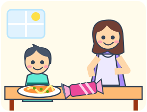

1 לוגיקה: השפה של המתמטיקה
בפרק הזה נכיר את השפה שבה כתובה כל המתמטיקה: פסוקים, הקשרים ״לא״, ״וגם״, ״או״ ו״אם… אז…״, טבלאות אמת, חוקי דה מורגן, כללי היסק וכמתים. נלמד לחבר פסוקים ולבדוק טיעונים, ניעזר במנורות ובציורי מעגלים כדי לראות מתי פסוק אמת ומתי הוא שקר, נתפוס את הרובוט של המזכירות בטעויות, נפתור תעלומה בקפטריה, ונבקר באי שבו חלק מהתושבים תמיד דוברים אמת וחלקם תמיד משקרים. אבל קודם, בדיחה.
1.1 שלושה מתמטיקאים ניגשים לדוכן פלאפל
שלושה מתמטיקאים ניגשים לדוכן פלאפל. כל אחד יודע אם הוא עצמו רוצה פלאפל, אך אינו יודע מה רוצים האחרים. הם עונים לפי הסדר, שומעים את התשובות שלפניהם ומסיקים מהן מסקנות. כולם עונים בכנות: ״כן״ או ״לא״ רק כשהמידע מספיק, ו״אני לא יודע״ כשאינו מספיק. המוכר שואל את שלושתם אותה שאלה:
הראשון: ״אני לא יודע.״
השנייה: ״אני לא יודעת.״
השלישי: ״כן!״
מה אפשר להסיק על הרצון של כל אחד, וכמה מנות פלאפל צריך להכין? במשחק בחרו לכל דמות אם היא רוצה פלאפל, אינה רוצה, או שאי אפשר לדעת. שימו לב: הדמויות עונות על השאלה אם כולם רוצים, ולא על השאלה אם הן עצמן רוצות.
משחק 1.1.1 — דוכן הפלאפל.
אז מה המוכר עושה?
המוכר מכין שלוש מנות פלאפל.
- הראשון רוצה פלאפל. אילו לא היה רוצה, הוא היה יודע מיד שהתשובה היא ״לא״: מספיק אחד שלא רוצה כדי שלא כולם רוצים. אבל הוא לא יודע מה רוצים השניים האחרים, ולכן הוא עונה ״אני לא יודע״.
- השנייה שמעה את הראשון, ולכן היא כבר יודעת שהוא רוצה. גם היא רוצה (אחרת הייתה עונה ״לא״), אבל על השלישי היא לא יודעת כלום.
- השלישי שמע את שניהם, ולכן הוא יודע ששניהם רוצים. הוא עצמו רוצה, ולכן הוא היחיד שיכול לענות על השאלה כולה: ״כן!״
הבדיחה מצחיקה (לפחות את המתמטיקאים) כי שלושתם עונים בדיוק על השאלה שנשאלה, ורק לפי מה שהם יודעים. המוכר שאל על כולם, לא על כל אחד בנפרד. ושימו לב: ״אני לא יודע״ אינה תשובה ריקה. היא מספרת למוכר משהו. כך מתחילים לחשוב באופן לוגי: מבררים מה בדיוק נשאל, איזה מידע ידוע, ואילו מסקנות נובעות ממנו. עוד נחזור לדוכן הפלאפל, ונכתוב את השאלה של המוכר בשפה של הלוגיקה.
1.2 על מה הקורס הזה?
הקורס הזה הוא במידה רבה קורס שפה. למתמטיקה יש שפה משלה, עם מילים כמו ״וגם״, ״או״, ״אם… אז…״, ״לכל״ ו״קיים״. אלה מילים רגילות, אבל במתמטיקה יש לכל אחת מהן משמעות מדויקת אחת, ולפעמים היא שונה ממה שאנחנו רגילים אליו ביומיום. בקורס נלמד את המילים האלה, ואת המושגים שבנויים מהן: קבוצות, יחסים, פונקציות, אינדוקציה וספירה.
המושגים האלה יופיעו בכל קורס מתמטי שתלמדו אחר כך. הם גם השפה שבה מחשבים ״חושבים״:
- תנאי בתוכנה. שורת קוד כמו
if battery > 20 and wifi_onמשתמשת ב״וגם״ בדיוק במובן שנלמד כאן. - סינון באתר קניות. ״מחיר עד 100 ₪ וגם (צבע שחור או כחול)״ הוא תנאי שמורכב מכמה תנאים פשוטים. האתר מציג רק את המוצרים שעומדים בתנאי הזה.
- חיפוש במאגרי מידע. כל חיפוש ״מתקדם״ הוא צירוף של תנאים עם ״וגם״, ״או״ ו״לא״.
- מעגלים לוגיים במחשבים. בפרק נשתמש במודל של מתגים ומנורות כדי להמחיש כיצד מחשבים ערך אמת מתוך כמה ערכי קלט.
חשוב לזכור.
בקורס הזה לומדים לקרוא ולכתוב מתמטיקה. כמו בכל שפה, בהתחלה מתרגמים כל מילה בזהירות, ואחר כך זה נעשה טבעי.
1.3 האם המסקנה נובעת מההנחות?
נניח שאומרים לנו: ״כל הסטודנטים בקורס קיבלו הודעה. דנה סטודנטית בקורס. לכן דנה קיבלה הודעה״. מה עשינו כאן? התחלנו משני פרטי מידע, ובעזרתם הגענו לטענה נוספת.
הערה 1.3.1 — המילים של טיעון: מאיפה מתחילים ולאן מגיעים?.
- טענה היא משהו שאומרים שהוא נכון. למשל: ״דנה קיבלה הודעה״.
- הנחות הן הטענות שמקבלים כנקודת מוצא לבדיקה. בדוגמה: ״כל הסטודנטים בקורס קיבלו הודעה״ ו״דנה סטודנטית בקורס״.
- מסקנה היא הטענה שמבקשים להצדיק בעזרת ההנחות. בדוגמה: ״דנה קיבלה הודעה״.
- טיעון הוא ההנחות יחד עם המסקנה שמציעים להסיק מהן. המילה ״לכן״ מסמנת לעיתים קרובות את המעבר למסקנה.
כשאומרים שהמסקנה נובעת מההנחות, מתכוונים: אם ההנחות נכונות, המסקנה חייבת להיות נכונה גם היא. לטיעון כזה קוראים טיעון תקף.
כדי לבדוק תקפות, שואלים מה יקרה אם נקבל את ההנחות. זו שאלה נפרדת מהשאלה אם ההנחות אכן נכונות בעולם. הדוגמה הבאה מפרידה בכוונה בין שתי השאלות.
דוגמה 1.3.2 — מיצי עפה.
- הנחה: כל החתולים יודעים לעוף.
- הנחה: מיצי היא חתולה.
- מסקנה: מיצי יודעת לעוף.
ההנחה הראשונה אינה נכונה בעולם. אבל אם מניחים שכל החתולים יודעים לעוף ושמיצי חתולה, נובע שמיצי יודעת לעוף. לכן הטיעון תקף, גם כשההנחה שממנה התחיל שגויה.
דוגמה 1.3.3 — מיצי, והפעם הפוך.
- הנחה: כל החתולים הם יונקים.
- הנחה: מיצי היא יונקת.
- מסקנה: מיצי היא חתולה.
האם המסקנה חייבת להיות נכונה? לא. ייתכן שמיצי היא כלבה. במקרה כזה שתי ההנחות נכונות — כל החתולים יונקים, וגם מיצי יונקת — אבל המסקנה ״מיצי חתולה״ שגויה. לכן הטיעון אינו תקף. גם אם במקרה מיצי אכן חתולה, ההנחות האלה לבדן אינן מספיקות להוכיח זאת.
בדיקה עצמית.
הנחות: כל הסטודנטים בקורס אוהבים פיצה. דנה סטודנטית בקורס. מסקנה: דנה אוהבת פיצה. האם המסקנה נובעת מההנחות?
1.3.1 מה הדוגמאות מלמדות?
בדוגמה הראשונה המסקנה נובעת מההנחות, אף שאחת ההנחות שגויה. בדוגמה השנייה אפשר ששתי ההנחות יהיו נכונות והמסקנה תהיה שגויה. זו בדיוק הסיבה לפסול את הטיעון השני.
חשוב לזכור.
טיעון תקף שומר על האמת: כאשר כל הנחותיו נכונות, גם מסקנתו נכונה. אם אחת ההנחות שגויה, תקפות הטיעון אינה מבטיחה שהמסקנה נכונה — אבל גם אינה קובעת שהיא שגויה.
בהמשך נשתמש במתגים ובמנורות כדי לחשב ערכי אמת. המעגלים יעזרו לנו לראות כיצד הקשרים ״לא״, ״וגם״ ו״או״ פועלים על פסוקים.
1.4 פסוקים
כדי לבדוק טיעון, צריך קודם להבין מה בדיוק נאמר בהנחות ובמסקנה שלו. בלוגיקה מתחילים ממשפטים שאומרים משהו שאפשר לקבוע עליו: זה נכון או זה לא נכון. למשפט כזה קוראים פסוק. אחר כך נלמד לחבר פסוקים בעזרת מילים כמו ״וגם״ ו״אם… אז…״, ולבדוק אילו מסקנות נובעות מהם.
הגדרה 1.4.1 — מהו פסוק?.
פסוק הוא משפט חיווי — כלומר, משפט שטוען טענה — שהוא נכון או שגוי, אך לא שניהם. משפט שגוי נחשב פסוק בדיוק כמו משפט נכון.
כדי לתאר את התוצאה של הבדיקה, משתמשים במונח ערך אמת:
- אם הפסוק נכון, אומרים שערך האמת שלו הוא אמת, ומסמנים \(T\) (מהמילה האנגלית True).
- אם הפסוק שגוי, אומרים שערך האמת שלו הוא שקר, ומסמנים \(F\) (False).
השם עלול לבלבל: המונח ״ערך אמת״ כולל את שתי האפשרויות — גם אמת וגם שקר. כשאומרים שלפסוק יש ערך אמת, עדיין לא אומרים שהוא נכון. ייתכן בהחלט שערך האמת שלו הוא שקר.
בהמשך, כשנשאל ״מה ערך האמת של הפסוק?״, הכוונה תהיה פשוט: האם הוא נכון או שגוי?
שימו לב: כששואלים ״האם זה פסוק?״, לא שואלים ״האם זה נכון?״. גם משפט שגוי יכול להיות פסוק. השאלה היא האם נאמר כאן משהו מוגדר שהוא נכון או שגוי. גם כשקובעים ״זה שגוי״, מדובר בפסוק.
הערה 1.4.2 — איך קוראים את הסימנים בדוגמאות?.
הסימן \(=\) אומר שווה ל־: למשל, \(2+2=4\) נקרא ״שתיים ועוד שתיים שווה לארבע״.
הסימן \(>\) אומר גדול מ־: \(7>5\) נקרא ״שבע גדול מחמש״. הסימן \(<\) אומר קטן מ־: \(2<5\) נקרא ״שתיים קטן מחמש״. את התרגילים ואת ההשוואות בין מספרים קוראים משמאל לימין, גם כשההסבר שסביבה בעברית. הקצה הצר של הסימן פונה אל המספר הקטן.
״גדול מ־״ אינו כולל שוויון: \(5>5\) הוא שקר, ואילו \(5=5\) הוא אמת.
דוגמה 1.4.3 — מה נחשב פסוק?.
- ״\(2+2=4\)״ הוא פסוק. הוא נכון, ולכן ערך האמת שלו הוא \(.T\)
- ״\(3>5\)״ הוא גם פסוק. הוא שגוי, ולכן ערך האמת שלו הוא \(.F\) השגיאה אינה מונעת ממנו להיות פסוק.
- ״בחדר 101 בקמפוס רמת גן היו בדיוק 20 כיסאות בשעה 10:00 ב־26 באוקטובר 2026״ הוא פסוק. קבענו חדר וזמן מסוימים. גם אם אף אחד מאיתנו לא ספר את הכיסאות, היו שם בדיוק 20 כיסאות או שמספרם היה אחר.
- ״מה השעה?״ אינו פסוק. זו שאלה; היא מבקשת מידע ואינה טוענת שמשהו נכון.
- ״סגרו את הדלת!״ אינו פסוק. זו בקשה לבצע פעולה. אפשר לציית לה או להתעלם ממנה, אבל לא לומר שהבקשה עצמה היא אמת או שקר.
חשוב לזכור.
כדאי להפריד בין מה שנכון לבין מה שאנחנו יודעים. ייתכן שפסוק מסוים נכון או שגוי, ובכל זאת אנחנו עדיין לא יודעים איזו משתי האפשרויות מתקיימת. ״אני לא יודע״ מתאר את הידע שלנו; הוא אינו ערך אמת שלישי.
1.4.1 איך נותנים לפסוק שם?
כשחוזרים כמה פעמים על אותו משפט, נוח לתת לו שם קצר. למשל, במקום לכתוב שוב ושוב ״המקרן עובד״, נבחר את האות \(A\) כשם של הפסוק הזה. האות מייצגת את המשפט כולו.
דוגמה 1.4.4 — שם קצר למשפט שלם.
נבחר שני שמות:
| השם שבחרנו | הפסוק שהשם מייצג |
|---|---|
| \(A\) | ״המקרן עובד״ |
| \(B\) | ״המסך פתוח״ |
אחרי שבחרנו את השמות, ״\(A\) אמת״ פירושו שהמקרן עובד. ״\(A\) שקר״ פירושו שהמקרן אינו עובד. באותה דרך, ״\(B\) אמת״ פירושו שהמסך פתוח.
האות אינה מוסיפה מידע על העולם: נתנו למשפט שם, אבל עדיין צריך לבדוק אם מה שהוא אומר נכון.
חשוב לזכור — שם של פסוק וערך האמת שלו הם שני דברים שונים.
\(A\) הוא שם של משפט. \(T\) ו-\(F\) הם ערכי אמת: הם אומרים אם המשפט נכון או שגוי. לכן בחירה בשם \(A\) אינה קביעה שהפסוק אמת, ואינה קביעה שהוא שקר.
נשתמש בשמות כמו \(A\), \(B\) או \(P\), ובכל דוגמה נאמר איזה משפט כל אות מייצגת. בתוך אותה דוגמה נשמור על המשמעות שבחרנו.
עד עכשיו נתנו שמות למשפטים שלמים. כעת נכיר משפט שנשאר בו מקום שצריך למלא. קודם נבין מה חסר בו ואיך משלימים אותו, ורק אחר כך נלמד איך נותנים גם לו שם.
1.4.2 משפט שתלוי בערך שנבחר: פסוק פתוח
נתחיל ממשפט שיש בו מקום ריק:
דוגמה 1.4.5 — איזה מספר חסר?.
״המספר ___ גדול מ־5.״
האם המשפט נכון? עדיין אי אפשר לענות, כי לא אמרנו על איזה מספר מדברים. אם נמלא את המקום הריק ב־7, נקבל ״7 גדול מ־5״, וזה נכון. אם נמלא אותו ב־2, נקבל ״2 גדול מ־5״, וזה לא נכון.
שתי הבחירות מותרות. הן פשוט יוצרות שני פסוקים שונים: אחד אמיתי ואחד שקרי.
הערה 1.4.6 — שלוש מילים שנשתמש בהן: משתנה, ערך והצבה.
במקום להשאיר קו ריק, מתמטיקאים כותבים אות, למשל \(.x\) כך המשפט שלנו נעשה ״\(x>5\)״. קוראים אותו: ״איקס גדול מחמש״.
- משתנה הוא אות שמשמשת מקום לערך שאפשר לבחור. כאן המשתנה הוא \(.x\) האות אינה מכריחה אותנו לבחור מספר מסוים.
- ערך של משתנה הוא מה שבחרנו לשים במקום האות. אם בחרנו \(7\), נאמר: ״הערך של \(x\) הוא \(7\)״, ונכתוב \(.x=7\)
- הצבה היא החלפת האות בערך שבחרנו. למשל, הצבת \(7\) במקום \(x\) ב-״\(x>5\)״ נותנת ״\(7>5\)״.
אם אותה אות מופיעה כמה פעמים באותו משפט, מחליפים את כל ההופעות שלה באותו ערך. למשל, בהצבת \(3\) ב-״\(x+x=10\)״ מקבלים ״\(3+3=10\)״. אי אפשר להחליף את ה-\(x\) הראשון ב־3 ואת השני ב־7: זו אותה אות, ולכן אותה בחירה.
הערה 1.4.7 — מאילו ערכים מותר לבחור? זהו התחום.
לרשימת הערכים שמותר להציב קוראים תחום. למשל, אפשר להחליט שבפעילות מסוימת מותר לבחור רק \(2\), \(5\) או \(7\). אז שלושת המספרים האלה הם התחום של הפעילות. בבחירת ערך לצורך ההצבה משתמשים בערכים שבתחום שנקבע.
בדוגמאות הכלליות הבאות נרשה לבחור כל מספר שלם: מספרים כמו \(0\), \(1\), \(2\), וגם \(-1\), \(-2\), וכן הלאה. מספרים כמו חצי אינם בתחום הזה.
משתנה אינו חייב לייצג מספר. במשפט ״___ הגיש את העבודה״ אפשר למלא שם של סטודנט, והתחום יכול להיות רשימת הסטודנטים בקורס. בכל דוגמה צריך לדעת איזה סוג של ערך מותר לשים במקום האות.
למה קוראים למשתנה ״חופשי״?
במשפט ״\(x>5\)״ נשאר לנו לבחור על איזה מספר מדברים. אין בו הוראה שאומרת ״בדקו כל מספר״ או ״בדקו אם יש לפחות מספר אחד שמתאים״. כדי לבדוק אותו עבור מספר מסוים, אנחנו מספקים את הערך מבחוץ, באמצעות הצבה. בתפקיד הזה \(x\) נקרא משתנה חופשי.
המילה ״חופשי״ מתארת את תפקיד האות בתוך המשפט. היא אינה אומרת שהמספר חייב להשתנות בכל רגע, וגם אינה אומרת שצריך לחפש דווקא מספר שייתן אמת. למשל, אפשר לבחור \(x=2\), לקבל שקר, ולסיים את הבדיקה הזאת בהצלחה: גילינו מהו ערך האמת אחרי ההצבה.
הגדרה 1.4.8 — איך נקרא משפט שנשאר בו משתנה חופשי?.
פסוק פתוח הוא ביטוי עם משתנה חופשי אחד או יותר, שאחרי שמציבים ערכים מתאימים במקום כל המשתנים החופשיים שבו מתקבל פסוק.
למשל, ״\(x>5\)״ הוא פסוק פתוח: יש בו מקום למספר. אחרי הצבת \(7\) מתקבל הפסוק ״\(7>5\)״, שהוא אמת. אחרי הצבת \(2\) מתקבל הפסוק ״\(2>5\)״, שהוא שקר. בשני המקרים השלמנו את המידע הדרוש כדי לבדוק את הטענה.
למשפט שכותבים בעזרת אותיות וסימנים קוראים כאן גם נוסחה. למשל, \(x>5\) היא נוסחה קצרה של המשפט ״איקס גדול מחמש״. כשאומרים ״הביטוי \(x>5\)״ מתכוונים לאותו רצף של אות וסימנים שכתבנו.
לפעמים מתארים זאת במילים ״משפט שתלוי בפרמטר״. בדוגמאות כאן הכוונה היא למשפט שבודקים אחרי שבוחרים ערך למשתנה. נשתמש בעיקר במילים ״משתנה״ ו״הצבה״, כדי שיהיה ברור איזו פעולה עושים.
איך נותנים שם לפסוק פתוח?
קודם נתנו שמות לפסוקים שלמים: למשל, \(A\) היה השם של ״המקרן עובד״. גם לפסוק פתוח אפשר לתת שם, אבל עכשיו נרצה להזכיר בשם שיש בו משתנה.
הערה 1.4.9 — קוראים את הסימון צעד אחר צעד.
נבחר את האות \(P\) לשם של הפסוק הפתוח ״\(x>5\)״. נכתוב את השם בצורה \(P(x)\) כדי להזכיר שהמשפט כולל את המשתנה \(.x\) בדוגמה הזאת, \(P(x)\) הוא קיצור של ״\(x>5\)״.
קוראים את הסימון ״פי של איקס״:
- \(P\) מזכירה איזה פסוק פתוח בודקים — כאן, ״\(x>5\)״.
- \(x\) בתוך הסוגריים מזכיר על איזה ערך הטענה מדברת — הערך שנבחר במקום \(.x\)
- הסוגריים כאן אינם סימן כפל. \(P(x)\) אינו אומר ״\(P\) כפול \(x\)״.
אם נציב \(7\) במקום \(x\), נכתוב \(.P(7)\) הכוונה היא לאותה טענה, אבל עכשיו על המספר \(7\): ״\(7>5\)״. זה כבר פסוק שאפשר לקבוע עליו אמת או שקר.
כעת אפשר להשוות בין התפקידים של האותיות בלי לערבב ביניהם: \(A\) הוא שם של פסוק שלם; ב-\(P(x)\), האות \(P\) נותנת שם לטענה, והאות \(x\) מסמנת את המקום שבו מציבים ערך. בטבלה הבאה נראה את שם הפסוק ואת המשפט שהוא מייצג זה לצד זה.
דוגמה 1.4.10 — אותו פסוק פתוח, שלוש הצבות.
ניקח את \(P(x)\): ״\(x>5\)״, כאשר \(x\) הוא מספר שלם.
| הערך שבוחרים | הסימון אחרי ההצבה | הפסוק שמתקבל | ערך האמת |
|---|---|---|---|
| \(x=7\) | \(P(7)\) | \(7>5\) | אמת (\(T\)) |
| \(x=2\) | \(P(2)\) | \(2>5\) | שקר (\(F\)) |
| \(x=5\) | \(P(5)\) | \(5>5\) | שקר (\(F\)) |
בשורה האחרונה מתקבל שקר משום שהסימן \(>\) אומר ״גדול ממש״. המספר \(5\) שווה ל-\(5\), ולכן אינו גדול ממנו. כל שורה בטבלה היא כבר פסוק, כי בחרנו בה מספר מסוים.
דוגמה 1.4.11 — שני משתנים: מה עדיין נשאר פתוח?.
במשפט ״\(x+y=10\)״ יש שני מקומות לבחירה: \(x\) ו-\(.y\) שתי האותיות שונות, ולכן מותר לבחור להן ערכים שונים. נרשה כאן לבחור מספרים שלמים.
| מה כבר הצבנו? | מה כתוב עכשיו? | מה עוד צריך לבחור? |
|---|---|---|
| עדיין לא הצבנו דבר | \(x+y=10\) | ערך ל-\(x\) וערך ל-\(y\) |
| הצבנו \(x=3\) | \(3+y=10\) | נשאר לבחור ערך ל-\(y\) |
| הצבנו גם \(y=7\) | \(3+7=10\) | לא נשאר משתנה חופשי; התקבל פסוק אמיתי |
אם בשלב האחרון נבחר דווקא \(y=4\), נקבל ״\(3+4=10\)״, שהוא פסוק שקרי. גם הוא פסוק: אפשר לקבוע שהמשפט שהתקבל שגוי. ״פתוח״ אינו שם אחר ל״שקרי״: פתוח אומר שעדיין נשאר משתנה חופשי; שקרי הוא תוצאה של בדיקת פסוק.
משחק 1.4.12 — ממלאים את החסר.
בפעילות הבאה יש שלושה סיבובים קצרים. בכל סיבוב בחרו ערך לכל אות, קראו את המשפט שהתקבל, ואז בחרו אם הוא אמת או שקר. מותר לבחור גם ערכים שנותנים שקר; המטרה היא לזהות נכון מה קיבלתם. אפשר גם לבדוק מה קורה לפני שממלאים את כל המקומות.
נסו על הנייר: הציבו 7 ואחר כך 2 במשפט ״x גדול מ־5״. במשפט ״x + y = 10״ הציבו תחילה רק x = 3: איזו אות עדיין נשארה? לבסוף, הציבו x = 5 במשפט ״x + x = 10״. זכרו להחליף את שתי ההופעות של x.
שימו לב — ערך שלא בחרנו לעומת עובדה שעוד לא בדקנו.
במשפט על מספר הכיסאות קבענו בדיוק על איזה חדר ועל איזה זמן מדברים. יש עובדה מסוימת שאפשר לברר. ב-״\(x>5\)״ השארנו בכוונה את \(x\) לבחירה, ולכן כל בחירה יכולה לתת פסוק אחר.
וגם: עצם הופעת האות \(x\) אינה מספיקה כדי להכריע. אם כבר נאמר ״ניקח \(x=7\)״, ערכו נקבע, ואפשר לבדוק את ״\(x>5\)״. לאורך הדוגמאות נציין אם כבר בחרנו ערך לצורך הבדיקה. חשוב להבחין: בחירת ערך מאפשרת לבדוק את הביטוי המקורי; אם ממש מחליפים את האות במספר, כמו במעבר מ-״\(x>5\)״ ל-״\(7>5\)״, האות כבר אינה מופיעה בתוצאה.
בהמשך, בסעיף על כמתים, נלמד דרך נוספת לקבל פסוק: לומר משהו על כל הערכים בתחום, או לומר שיש לפחות ערך אחד שמתאים. בשלב הזה נתמקד בהצבה ובשאלה מה עוד צריך לדעת כדי לקבל פסוק.
1.4.3 בודקים שההבדל ברור
עכשיו הכרנו פסוקים, שמות של פסוקים ופסוקים פתוחים. בדוגמאות הבאות נבדוק אם כבר נאמר משהו מוגדר שאפשר לומר עליו ״נכון״ או ״שגוי״, אם נשאר משתנה שצריך להציב בו ערך, או אם זו בכלל שאלה או בקשה. לפני הבדיקה נזכיר מה פירוש ״מספר זוגי״, כי נשתמש במושג הזה בדוגמה הראשונה.
הערה 1.4.13 — מה פירוש מספר זוגי?.
מספר שלם הוא זוגי אם הוא מתחלק ב־2 בלי שארית. למשל, אפשר לסדר 6 כיסאות בשלושה זוגות בלי להשאיר כיסא לבד. לכן 6 זוגי. ב־7 כיסאות יישאר כיסא אחד בלי בן זוג, ולכן 7 אי־זוגי.
גם \(0\) זוגי: \(0\) חלקי \(2\) הוא \(0\), בלי שארית. ההגדרה חלה גם על מספרים שליליים; למשל, \(-4\) זוגי כי \(-4\) חלקי \(2\) הוא המספר השלם \(-2\).
בדיקה עצמית — האם זה פסוק?.
בכל דוגמה שאלו קודם אם המשפט הוא פסוק. רק אחר כך, אם הוא פסוק, שאלו אם הוא אמת או שקר. ההסברים מופיעים מתחת לתשובות כדי שאפשר יהיה לקרוא ולבדוק את דרך החשיבה.
- ״\(7\) הוא מספר זוגי.״
- ״תהיו בשקט!״
- ״\(x+1=3\)״, כאשר \(x\) הוא מספר שלם שעדיין לא בחרנו.
הערה 1.4.14 — ומה עם ״המשפט הזה שקרי״?.
המשפט ״המשפט הזה שקרי״ מדבר על עצמו. האם אפשר לתת לו אחד משני ערכי האמת שלנו? ננסה כל אפשרות בנפרד:
- אם נחליט שהוא אמת, צריך לקבל את מה שהוא אומר. אבל הוא אומר שהוא שקרי, ולכן קיבלנו סתירה.
- אם נחליט שהוא שקר, הטענה שלו על עצמו אינה נכונה. כלומר, לא נכון שהוא שקרי — ולכן הוא אמיתי. שוב קיבלנו סתירה.
בשתי האפשרויות נתקעים. במסגרת הלוגיקה הדו־ערכית שנלמד, המשפט הזה אינו פסוק בעל ערך אמת מוגדר.
פרדוקס הוא מצב שבו דרך חשיבה שנראית סבירה מובילה לקושי או לסתירה. לדוגמה הזאת קוראים ״פרדוקס השקרן״. בחידות שבפרק נשתמש במשפטים שאפשר לחשב את ערכי האמת שלהם לפי כללים מוגדרים.
1.5 טבלאות אמת: איך מגדירים קשר לוגי?
נניח ש-\(A\) הוא הפסוק ״המחשב טעון״ ו-\(B\) הוא הפסוק ״יש חיבור לרשת אלחוטית״. אפשר לשאול על כל אחד מהם בנפרד, ואפשר לחבר אותם: ״המחשב טעון וגם יש חיבור לרשת אלחוטית״. קיבלנו פסוק מורכב, שבנוי משני פסוקים בעזרת הקשר ״וגם״.
המילים ״לא״, ״וגם״ ו״או״ נקראות קשרים לוגיים. לכל קשר יש כלל שקובע את ערך האמת של הפסוק המורכב מתוך ערכי האמת של החלקים. למשל, כדי שהמשפט עם ״וגם״ יהיה נכון, שני החלקים שלו צריכים להיות נכונים. בהמשך נכיר גם את הקשר ״אם… אז…״ ונשתמש בו כדי לנסח טיעונים.
כדי להשתמש בקשר לוגי באופן מדויק, צריך לומר מה תהיה התוצאה בכל אפשרות: כשהחלקים אמת, כשהם שקר, וכשרק אחד מהם אמת. את הכלל הזה נכתוב בצורה מסודרת שנקראת טבלת אמת.
הגדרה 1.5.1 — מה מציגה טבלת אמת?.
טבלת אמת מציגה את כל הצירופים האפשריים של ערכי האמת של החלקים, ולכל צירוף מציינת את ערך האמת של הפסוק שמתקבל מהם.
כל שורה היא מצב אחד שבודקים. העמודות הראשונות מציגות את ערכי האמת של החלקים; עמודת התוצאה מציגה את ערך האמת של המשפט כולו. \(T\) פירושו אמת, ו-\(F\) פירושו שקר.
1.5.1 אילו אפשרויות צריך לכלול?
כאשר הקשר פועל על פסוק אחד, כמו ״לא״, יש שתי אפשרויות לבדוק: הפסוק המקורי אמת, או שהוא שקר. לכן יהיו בטבלה שתי שורות.
כאשר הקשר מחבר שני פסוקים, כמו ״וגם״ או ״או״, יש ארבע אפשרויות. נרשום תחילה רק את החלקים, לפני שקבענו כיצד לחבר אותם:
| \(A\) | \(B\) | מה אומרת השורה? |
|---|---|---|
| \(T\) | \(T\) | שני החלקים אמת |
| \(T\) | \(F\) | החלק הראשון אמת והשני שקר |
| \(F\) | \(T\) | החלק הראשון שקר והשני אמת |
| \(F\) | \(F\) | שני החלקים שקר |
כדי להגדיר קשר, נוסיף לצירופים האלה עמודת תוצאה ונקבע בה \(T\) או \(F\) בכל שורה. למשל, ״וגם״ ייתן אמת רק בשורה שבה שני החלקים אמת. ״או״ ייתן אמת גם בשורות שבהן רק אחד החלקים אמת. נכתוב את הטבלאות המלאות מיד בסעיפים הבאים.
כלל — טבלת האמת מגדירה את הקשר.
כשמגדירים קשר לוגי, עמודת התוצאה קובעת מה פירוש הקשר בכל מצב אפשרי. לכל צירוף של ערכי אמת יש תוצאה אחת שהכלל מחייב.
שני קשרים יכולים לפעול על אותם פסוקים ובכל זאת לתת תוצאות שונות. מה שמבדיל ביניהם הוא הכלל שבעמודת התוצאה. בהמשך, המנורות והמשחקים יציגו את התוצאה שהטבלה קובעת.
1.5.2 איך משתמשים בטבלה?
- בודקים מה ערך האמת של כל חלק במשפט.
- מוצאים את השורה שבה מופיעים הערכים האלה בעמודות החלקים.
- קוראים באותה שורה את עמודת התוצאה. זה ערך האמת של המשפט כולו.
למשל, אם \(A\) אמת ו-\(B\) שקר, מחפשים את השורה \(A=T\), \(B=F\). אחר כך קוראים את התוצאה בטבלה של הקשר שבו השתמשנו. אותה שורה תופיע גם בטבלת ״וגם״ וגם בטבלת ״או״, אבל התוצאות בהן יכולות להיות שונות.
1.6 קשרים לוגיים: מחברים פסוקים
בכל קשר נתחיל מהמשמעות במילים, נגדיר אותו באמצעות טבלת האמת, ואז נראה את הכלל בפעולה בעזרת המנורה. אפשר לחזור לטבלה בכל שלב במשחק כדי לבדוק מה אמור לקרות.
1.6.1 שלילה: ״לא״
אם \(A\) הוא ״יש פקק בכביש״, מה צריך להיות נכון כדי שנוכל לומר ״אין פקק בכביש״? בדיוק ההפך: המשפט הראשון צריך להיות שקרי. הפעולה הזאת נקראת שלילה, ומסמנים אותה בסימן \(\neg\) לפני הפסוק. לכן \(\neg A\) נקרא ״לא \(A\)״.
הגדרה 1.6.1.
השלילה של פסוק \(,A\) שמסומנת \(\neg A\) (קוראים: ״לא \(A\)״), היא הפסוק שאמת בדיוק כאשר \(A\) שקר.
הטבלה הבאה מגדירה את ערך האמת של הפסוק בכל אפשרות:
| \(A\) | \(\neg A\) |
|---|---|
| \(T\) | \(F\) |
| \(F\) | \(T\) |
נקרא את השורות: אם \(A\) אמת, \(\neg A\) שקר; אם \(A\) שקר, \(\neg A\) אמת. זהו הכלל שמגדיר את השלילה. לדוגמה, כשאין פקק, ״יש פקק״ שקר ו״אין פקק״ אמת.
כלל — הכלל של ״לא״.
שלילה מחליפה בין נכון לשגוי. אם הפסוק המקורי נכון, שלילתו שגויה; אם הפסוק המקורי שגוי, שלילתו נכונה.
איך המנורה עוזרת לנו לראות ערכי אמת?
במשחקים הבאים נציג כל פסוק פשוט באמצעות מתג. בחירה ב-\(T\) אומרת: ״נבדוק מה קורה כשהפסוק הזה אמת״. בחירה ב-\(F\) אומרת: ״נבדוק מה קורה כשהוא שקר״. לחיצה על מתג מחליפה את המצב שאנחנו בודקים; למשל, היא מאפשרת להשוות בין מצב שבו המחשב טעון למצב שבו אינו טעון.
מנורה אחת תציג את ערך האמת של הפסוק שנרצה לבדוק:
- מנורה דולקת: הפסוק אמת (\(T\)).
- מנורה כבויה: הפסוק שקר (\(F\)).
ליד המנורה יופיע המשפט שהיא מייצגת. כדאי לקרוא אותו בכל שלב: לפעמים המנורה תציג את \(A\), ולפעמים את \(\neg A\) או פסוק שמורכב מכמה חלקים. לכן מצב המתג ומצב המנורה אינם חייבים להיות זהים.
ציור המעגל עוזר לראות את הכלל: כשיש מסלול סגור מהסוללה דרך המנורה ובחזרה, היא נדלקת. הפתח הקטן בחוט נקרא מגע. מגע שמסומן \(A\) נסגר כאשר \(A\) אמת; מגע שמסומן \(\neg A\) נסגר כאשר \(A\) שקר. בהמשך אותו מתג עשוי להופיע בכמה מקומות בציור, וכל ההופעות שלו ישתנו יחד. המטרה בכל שלב היא להסביר מדוע הפסוק אמת או שקר; הציור מאפשר לראות את התשובה גם בעיניים.
במשחק הבא נתחיל מהיכרות קצרה עם המנורה: בשלב הראשון המתג והמנורה מייצגים שניהם את ״המקרן עובד״. בשלב השני המתג מייצג את ״יש פקק בכביש״, והמנורה מייצגת את ״אין פקק בכביש״. בכל שלב לחצו על המתג כך שהמשפט שליד המנורה יהיה אמת, כלומר שהמנורה תידלק. לפני הלחיצה נסו לומר במילים איזה מצב אתם צריכים לבחור.
משחק 1.6.2 — פסוק ושלילתו.
הערה 1.6.3 — מה פירוש מספר ראשוני?.
ראשית, כשאומרים שמספר מתחלק במספר אחר, מתכוונים שהחלוקה נותנת מספר שלם, בלי שארית. למשל, 6 מתחלק ב־2 כי \(6=2\cdot3\). הנקודה \(\cdot\) מסמנת כפל. לעומת זאת, 5 אינו מתחלק ב־2: אפשר ליצור שני זוגות, אבל נשאר אחד. למספר שבו אפשר לחלק בלי שארית קוראים מחלק; למשל, 2 הוא מחלק של 6.
מספר ראשוני הוא מספר שלם גדול מ־1, שמתחלק בלי שארית רק ב־1 ובעצמו, מבין המספרים השלמים החיוביים. חיובי פירושו גדול מאפס.
- 5 ראשוני: בין המספרים 1 עד 5, רק 1 ו־5 מחלקים אותו בלי שארית. 2, 3 ו־4 אינם מחלקים אותו כך.
- 6 אינו ראשוני: הוא מתחלק גם ב־2 וב־3, נוסף על 1 ועל 6.
- 2 ראשוני: המחלקים החיוביים שלו הם בדיוק 1 ו־2. לכן מספר יכול להיות גם זוגי וגם ראשוני.
- 1 אינו ראשוני: ההגדרה דורשת מספר גדול מ־1. ל־1 יש רק מחלק חיובי אחד, ולא שניים שונים.
בדוגמאות הלוגיות הבאות נשתמש בעובדות האלה כדי לבדוק פסוקים. אפשר לחזור לתיבה הזאת בכל פעם שמופיעה המילה ״ראשוני״.
דוגמה 1.6.4.
- אם \(A\) הוא ״\(5\) הוא מספר ראשוני״ (אמת), אז \(\neg A\) הוא ״\(5\) אינו מספר ראשוני״ (שקר).
- אם \(B\) הוא ״יש פקק בכביש״, אז \(\neg B\) הוא ״אין פקק בכביש״. שני הניסוחים ״אין פקק בכביש״ ו״לא נכון שיש פקק בכביש״ מבטאים אותה שלילה.
שאלה 1.6.5 — מתחילים ממשפט אחד.
נסמן ב-\(A\) את המשפט ״המקרן עובד״. כתבו את המשפט המודגש בעזרת \(A\) וסימן השלילה. אפשר להקליד את האות וללחוץ על כפתור הסימן. לאחר מכן לחצו על ״בדיקה״. אם נתקעים, אפשר לפתוח רמז.
״המקרן אינו עובד.״
האות \(A\) כבר מייצגת את המשפט ״המקרן עובד״. מה צריך להוסיף כדי לומר שהמשפט הזה אינו נכון?
התשובה היא \(\neg A\). קוראים אותה ״לא \(A\)״: לא נכון שהמקרן עובד. אין צורך לתת למשפט החדש אות חדשה.
1.6.2 וגם
נחזור למשפט ״המחשב טעון וגם יש חיבור לרשת אלחוטית״. אם המחשב טעון אבל אין חיבור לרשת, רק החלק הראשון נכון, ולכן המשפט כולו שקרי. המילה ״וגם״ דורשת ששני החלקים יהיו נכונים יחד.
הגדרה 1.6.6.
הפסוק ״\(A\) וגם \(B\)״, שמסומן \(,A \land B\) הוא אמת בדיוק כאשר שני הפסוקים \(A\) ו-\(B\) אמת.
הטבלה הבאה מגדירה את ערך האמת של הפסוק בכל אפשרות:
| \(A\) | \(B\) | \(A \land B\) |
|---|---|---|
| \(T\) | \(T\) | \(T\) |
| \(T\) | \(F\) | \(F\) |
| \(F\) | \(T\) | \(F\) |
| \(F\) | \(F\) | \(F\) |
למשל, בשורה \(A=T\), \(B=F\), המחשב טעון אבל אין חיבור לרשת. בעמודת \(A\land B\) מופיע \(F\), ולכן המשפט ״המחשב טעון וגם יש חיבור לרשת״ שקר. רק השורה הראשונה נותנת אמת.
במשחק הבא ערכי האמת כבר נבחרו עבורכם. קראו את שני החלקים ובחרו אם המשפט כולו אמת (המנורה דולקת) או שקר (המנורה כבויה). בציור, שני מגעים בזה אחר זה ממחישים את הדרישה הזאת: המסלול סגור רק כששניהם סגורים. לחיבור הזה קוראים חיבור בטור.
משחק 1.6.7 — האם שני החלקים נכונים?.
דוגמה 1.6.8.
- ״\(2\) זוגי וגם \(2\) ראשוני״: שני החלקים אמת, ולכן הפסוק כולו אמת.
- ״\(2\) זוגי וגם \(2>3\)״: החלק השני שקר, ולכן הפסוק כולו שקר.
- ״קר בחוץ, אבל נעים״: מבחינה לוגית זה ״קר בחוץ וגם נעים״. המילה ״אבל״ מדגישה ניגוד בשיחה, אך מבחינת ערכי האמת שני החלקים צריכים להיות נכונים.
שאלה 1.6.9 — מנסחים משפט עם ״וגם״ ו״לא״.
נסמן ב-\(A\) את ״יש בחינה מחר״ וב-\(B\) את ״למדתי״. כתבו את המשפט הבא בעזרת הסימנים שלמדנו. אפשר להיעזר בכפתורי הסמלים. כל נוסחה שמבטאת את אותו כלל תתקבל.
״יש בחינה מחר, ולא למדתי.״
שני דברים קורים יחד: איזה קשר מחבר אותם? ואיך כותבים ״לא למדתי״?
\(,A \land \neg B\) ״ו…״ הוא ״וגם״, ו״לא למדתי״ הוא \(.\neg B\)
כלל — הכלל של ״וגם״.
שני החלקים חייבים להיות נכונים. חלק שגוי אחד מספיק כדי שהמשפט כולו יהיה שגוי.
כשמתרגמים משפט, גם המילה ״אבל״ יכולה לחבר שתי דרישות: ״למדתי, אבל לא הצלחתי״ דורש גם שלמדתי וגם שלא הצלחתי.
שאלה 1.6.10 — שתי שלילות באותו משפט.
נסמן ב-\(A\) את ״הטלפון טעון״ וב-\(B\) את ״המטען בתיק״. כתבו את המשפט הבא בעזרת האותיות והסימנים.
״הטלפון אינו טעון, וגם המטען אינו בתיק.״
כתבו קודם כל חלק בנפרד: ״הטלפון אינו טעון״, ואז ״המטען אינו בתיק״. בשני החלקים מופיעה שלילה. עכשיו חברו ביניהם.
התשובה היא \(\neg A \land \neg B\). דורשים ששני הדברים יקרו יחד: גם טלפון שאינו טעון וגם מטען שאינו בתיק. לכן כותבים שלילה לפני כל אות, ו״וגם״ בין שני החלקים.
1.6.3 או
נבדוק את המשפט ״יש לי כרטיס סטודנט או שהשומר מכיר אותי״. כדי שהמשפט יהיה נכון, מספיק שאחד משני החלקים יהיה נכון. אם גם יש לי כרטיס וגם השומר מכיר אותי, המשפט עדיין נכון. הוא שקרי רק כאשר אין לי כרטיס וגם השומר אינו מכיר אותי.
הגדרה 1.6.11.
הפסוק ״\(A\) או \(B\)״, שמסומן \(,A \lor B\) הוא אמת בדיוק כאשר לפחות אחד מהפסוקים \(A\) ו-\(B\) אמת, כולל המקרה ששניהם אמת.
הטבלה הבאה מגדירה את ערך האמת של הפסוק בכל אפשרות:
| \(A\) | \(B\) | \(A \lor B\) |
|---|---|---|
| \(T\) | \(T\) | \(T\) |
| \(T\) | \(F\) | \(T\) |
| \(F\) | \(T\) | \(T\) |
| \(F\) | \(F\) | \(F\) |
נקרא שוב את השורה \(A=T\), \(B=F\). הפעם בעמודת \(A\lor B\) מופיע \(T\): יש כרטיס, וזה מספיק כדי שהמשפט עם ״או״ יהיה אמת. גם השורה שבה שני החלקים אמת נותנת אמת; כך הגדרנו את ״או״ בלוגיקה.
במשחק בחרו בכל סיבוב אם המשפט כולו אמת או שקר. בציור יש שני מסלולים חלופיים, ולכן מספיק שאחד מהם יהיה סגור כדי שהמנורה תידלק. לחיבור כזה קוראים חיבור במקביל. זו דרך לצייר את הכלל של ״או״.
משחק 1.6.12 — האם לפחות חלק אחד נכון?.
שימו לב — ה״או״ של הלוגיקה מכליל.
ביומיום המשמעות של ״או״ תלויה בהקשר. לפעמים הכוונה היא מפרידה: אחד מהשניים, אבל לא שניהם. ״תה או קפה?״ פירושו ״בחרו אחד״. ה״או״ של הלוגיקה, לעומת זאת, מכליל: הוא אמת גם כששני החלקים מתקיימים. מכאן הבדיחה הידועה: שואלים לוגיקן בקפטריה ״תה או קפה?״, והוא עונה: ״כן.״ מבחינתו נשאלה שאלת כן/לא: האם הוא רוצה (תה) או (קפה)? והתשובה היא כן.
כלל — הכלל של ״או״.
לפחות חלק אחד נכון — ואפשר גם ששניהם נכונים. המשפט עם ״או״ שגוי רק כששני החלקים שגויים.
שאלה 1.6.13 — מספיקה אחת משתי האפשרויות.
נסמן ב-\(A\) את ״יש לי כרטיס סטודנט״ וב-\(B\) את ״השומר מכיר אותי״. כתבו את המשפט הבא. הכוונה ל״או״ של הלוגיקה: גם שתי האפשרויות יחד מתאימות.
״יש לי כרטיס סטודנט או שהשומר מכיר אותי, ואפשר גם ששניהם נכונים.״
לא דורשים ששני החלקים יהיו נכונים יחד. איזה קשר מתאים לדרישה שלפחות חלק אחד יהיה נכון?
התשובה היא \(A \lor B\). אם יש כרטיס והשומר גם מכיר אותי, המשפט עדיין נכון. המילים ״ואפשר גם ששניהם נכונים״ מבהירות את המשמעות של ״או״; אין צורך להוסיף להן חלק נפרד בנוסחה.
שאלה 1.6.14 — ״לא״ בתוך אחת האפשרויות.
נסמן ב-\(A\) את ״יורד גשם״ וב-\(B\) את ״יש לי מטרייה״. כתבו את המשפט הבא. גם כאן ״או״ כולל את האפשרות ששני החלקים נכונים.
״לא יורד גשם, או שיש לי מטרייה.״
החלק הראשון הוא ״לא יורד גשם״. החלק השני הוא ״יש לי מטרייה״. על איזו אות פועל ה״לא״?
התשובה היא \(\neg A \lor B\). שוללים רק את \(A\), משום שהמשפט אומר שלא יורד גשם. לא שוללים את \(B\): האפשרות השנייה היא דווקא שיש מטרייה.
1.6.4 או מפריד
נניח שבהזמנת ארוחה בוחרים תוספת אחת: קינוח או קפה, אבל לא את שניהם. בחירה בקינוח בלבד מתאימה, וגם בחירה בקפה בלבד מתאימה. בחירה בשניהם אינה מתאימה, וגם ויתור על שניהם אינו מתאים לכלל ״בדיוק אחד״.
כשרוצים לומר ״בדיוק אחד מהשניים, ולא שניהם״ משתמשים בקשר נפרד, שנקרא או מפריד.
הגדרה 1.6.15 — או מפריד: שני סימונים לאותו קשר.
הפסוק ״\(A\) או \(B\), אבל לא שניהם״ הוא אמת כאשר בדיוק אחד משני החלקים אמת. לקשר הזה קוראים או מפריד, ובאנגלית XOR.
מסמנים אותו בשתי דרכים:
\[A \oplus B \qquad\qquad A \underline{\lor} B\]
בסימון השני יש סימן ״או״ עם קו מתחתיו. שני הסימונים אומרים בדיוק אותו דבר. לאורך רוב הפרק נכתוב \(\oplus\), אבל כשרואים \(\underline{\lor}\) קוראים אותו באותה דרך: ״או, אבל לא שניהם״.
הטבלה הבאה מגדירה את הקשר. עמודת התוצאה האחרונה מתאימה לשני סימוני ה-XOR. לצדה מופיעה טבלת ״או״ הרגיל, כדי לראות את ההבדל:
| \(A\) | \(B\) | \(A \lor B\) | \(A \oplus B\), כלומר \(A \underline{\lor} B\) |
|---|---|---|---|
| \(T\) | \(T\) | \(T\) | \(F\) |
| \(T\) | \(F\) | \(T\) | \(T\) |
| \(F\) | \(T\) | \(T\) | \(T\) |
| \(F\) | \(F\) | \(F\) | \(F\) |
ההבדל מ״או״ הרגיל הוא בשורה הראשונה בלבד: כששני החלקים אמת, ״או״ הרגיל אמת, ואילו ״או מפריד״ שקר. הקו שמתחת ל-\(\lor\) הוא חלק מהסימון, ולכן חשוב להבחין אם הוא מופיע.
במשחק הבא נבדוק את הכלל הזה בעזרת שני מתגים ומנורה. בכל מצב של המתגים מצאו את השורה המתאימה בטבלה, וראו אם המנורה מציגה את התוצאה שהוגדרה בה.
משחק 1.6.16 — האור במדרגות.
דוגמה 1.6.17.
- ״בארוחה העסקית מקבלים קינוח או קפה״: כמעט תמיד הכוונה ל-\(:\oplus\) אחד מהם, לא שניהם.
- ״אפשר להיכנס עם כרטיס סטודנט או עם אישור כניסה״: כאן הכוונה ל-\(:\lor\) מי שיש לו את שניהם בוודאי ייכנס.
- במעגל המדרגות שבמשחק, האור דולק כשבדיוק אחד מהמתגים במצב \(T\), ולכן כל לחיצה על אחד המתגים, למטה או למעלה, הופכת את מצבו. זה \(.\oplus\)
בדיקה עצמית.
״\(2\) זוגי, או \(3\) זוגי, אבל לא שניהם.״ אמת או שקר?
״\(2\) זוגי, או \(4\) זוגי, אבל לא שניהם.״ אמת או שקר?
כלל — ההבדל שכדאי לזכור.
ב״או״ הרגיל: לפחות אחד, כולל שניהם.
ב״או מפריד״: בדיוק אחד, בלי שניהם. לכן רק במקרה ששני החלקים נכונים נקבל תשובות שונות משני הקשרים.
שאלה 1.6.18 — הקפטריה מרשה לבחור רק אחד.
נסמן ב-\(A\) את ״בחרתי קינוח״ וב-\(B\) את ״בחרתי קפה״. כתבו את המשפט הבא. אפשר להשתמש באחד משני סימני ״או מפריד״ שבמקלדת הסמלים.
״בחרתי קינוח או קפה, אבל לא את שניהם.״
אם בחרתי גם קינוח וגם קפה, האם קיימתי את המשפט? השאלה הזאת מבדילה בין ״או״ הרגיל לבין ״או מפריד״.
התשובה היא \(A \oplus B\), ואפשר לכתוב גם \(A \underline{\lor} B\). קינוח בלבד מתאים, וקפה בלבד מתאים. שתי הבחירות יחד אינן מתאימות, וגם ויתור על שניהם אינו מתאים.
1.6.5 בחזרה לדוכן הפלאפל
עכשיו אפשר לכתוב את השאלה של המוכר בשפה של הלוגיקה. נסמן ב-\(W_1\) את הפסוק ״הראשון רוצה פלאפל״, וב-\(W_2\) ו-\(W_3\) את אותו פסוק עבור השנייה והשלישי. השאלה ״כולם רוצים פלאפל?״ מבקשת לדעת אם הפסוק הבא אמיתי: \[.W_1 \land W_2 \land W_3\] הפסוק הזה אמת רק כאשר כל השלושה רוצים פלאפל. מספיק אדם אחד שאינו רוצה כדי שהפסוק יהיה שקרי. כשאותו אדם עונה ״לא״ לשאלה ״האם כולם רוצים?״, גם האחרים לומדים שלא כולם רוצים.
ומה עם השאלה ״מישהו רוצה פלאפל?״ כאן בודקים את הפסוק \(.W_1 \lor W_2 \lor W_3\) הוא אמת אם לפחות אחד מהשלושה רוצה, גם אם השניים האחרים אינם רוצים. במשחק הבא שימו לב לאיזו שאלה עונים: אותה מילה, ״לא״, מוסרת מידע אחר כאשר השאלה משתנה.
משחק 1.6.19 — דוכן הפלאפל: כולם ומישהו.
״כולם״ ו״מישהו״ יקבלו בהמשך סימנים משלהם, \(\forall\) ו-\(,\exists\) שנקראים כמתים. כבר עכשיו אפשר לראות את הרעיון: כשיש מספר סופי של מתמטיקאים — כלומר, אפשר לספור את כולם ולהגיע לסוף הרשימה — ״כולם״ הוא ״וגם״ ארוך, ו״מישהו״ הוא ״או״ ארוך.
1.6.6 סוגריים
כאשר מחברים כמה פסוקים, צריך להבהיר אילו חלקים שייכים יחד. הסוגריים ממלאים כאן אותו תפקיד כמו בחשבון: הם מראים איזה חלק מחשבים קודם.
נסמן ב-\(A\) את ״יש קפה״, ב-\(B\) את ״יש תה״ וב-\(C\) את ״התור ארוך״. נשווה בין שני משפטים:
- יש קפה או תה, ובנוסף התור אינו ארוך. כאן דורשים שני דברים: שיהיה לפחות אחד מהמשקאות, ושהתור לא יהיה ארוך. נכתוב \(.(A \lor B) \land \neg C\)
- יש קפה, או שיש תה והתור אינו ארוך. כאן יש שתי אפשרויות: קפה מספיק בפני עצמו; אם בוחרים באפשרות של תה, נדרש גם שהתור לא יהיה ארוך. נכתוב \(.A \lor (B \land \neg C)\)
למשל, נניח שיש קפה והתור ארוך. המשפט הראשון שקרי, משום שהדרישה לתור שאינו ארוך אינה מתקיימת. המשפט השני אמיתי, משום שהאפשרות ״יש קפה״ כבר מתקיימת. זה לא שינוי קוסמטי בסוגריים: שינינו את הטענה עצמה.
במשחק הבא בודקים את המשפט הראשון. נתון שאין קפה, ולכן המתג \(A\) קבוע על \(F\). חשבו מה צריך להיות נכון לגבי התה והתור כדי שהמשפט כולו יהיה אמת. בחרו את ערכי \(B\) ו-\(C\) המתאימים, והמנורה תציג את התוצאה.
משחק 1.6.20 — אין קפה. מתי המשפט עדיין נכון?.
שימו לב — על מה פועל ה״לא״?.
השלילה פועלת רק על מה שבא מיד אחריה: \(\neg A \land B\) פירושו \(,(\neg A) \land B\) ולא \(.\neg(A \land B)\) אלה שני פסוקים שונים (בדקו בטבלה, למשל עם \(A=T\) ו-\(B=F\)). ובין \(\land\) ל-\(\lor\) נכתוב תמיד סוגריים, כדי שלא יהיה ספק.
שאלה 1.6.21 — לא שניהם — מה בדיוק שוללים?.
נסמן ב-\(A\) את ״דנה הגיעה״ וב-\(B\) את ״יואב הגיע״. כתבו את המשפט הבא. קראו אותו בזהירות: הוא אינו אומר ששניהם נעדרו.
״לא נכון שגם דנה הגיעה וגם יואב הגיע.״
בתוך המשפט מופיעה הטענה ״דנה הגיעה וגם יואב הגיע״. כתבו אותה בסוגריים. ה״לא נכון״ שולל את כל הטענה הזאת.
התשובה היא \(\neg(A \land B)\). מספיק שאחד מהם לא הגיע כדי שהמשפט יהיה נכון. למשל, אם דנה הגיעה ויואב לא הגיע, אכן לא נכון ששניהם הגיעו. לכן אין לכתוב כאן \(\neg A \land \neg B\), שדורש ששניהם לא יגיעו.
שאלה 1.6.22 — שתי אפשרויות, ודרישה נוספת.
נסמן ב-\(A\) את ״יש לי עט״, ב-\(B\) את ״יש לי עיפרון״ וב-\(C\) את ״יש לי מחברת״. כתבו את המשפט הבא. אפשר שיהיו גם עט וגם עיפרון.
״יש לי עט או עיפרון, ובנוסף יש לי מחברת.״
הדרישה הראשונה מציעה שתי אפשרויות לכלי כתיבה. שימו את האפשרויות האלה בסוגריים. המחברת נדרשת בכל מקרה — גם כשיש עט וגם כשיש עיפרון.
התשובה היא \((A \lor B) \land C\). הסוגריים מחברים את שתי האפשרויות לדרישה אחת: לפחות כלי כתיבה אחד. אליה מצרפים את הדרישה למחברת. הנוסחה \(A \lor (B \land C)\) אינה מתאימה: היא הייתה מאפשרת עט בלי מחברת.
שאלה 1.6.23 — מנסחים ״או, אבל לא שניהם״.
נסמן ב-\(B\) את ״למדתי״ וב-\(C\) את ״ישנתי טוב״. כתבו את המשפט הבא בעזרת הסימנים שלמדנו. אפשר להיעזר בכפתורי הסמלים. כל נוסחה שמבטאת את אותו כלל תתקבל.
״למדתי או ישנתי טוב, אבל לא את שניהם.״
״אבל״ הוא ״וגם״. החלק ״לא את שניהם״ הוא השלילה של משהו.
החלק הראשון הוא \(,B \lor C\) והחלק השני הוא \(.\neg(B \land C)\) חברו אותם.
\(,(B \lor C) \land \neg(B \land C)\) כלומר \(.B \oplus C\) זהו או מפריד: בדיוק אחד משני החלקים אמת. גם \(B \oplus C\) (וגם הכתיבה B ⊻ C או B ^ C במקלדת) מתקבל כתשובה.
1.7 בונים טבלת אמת של פסוק מורכב
כבר השתמשנו בטבלאות אמת כדי להגדיר את ״לא״, ״וגם״ ו״או״. עכשיו נשתמש באותם כללים כדי לחשב משפט שיש בו כמה קשרים יחד. לכל חלק קטן נחשב את ערך האמת לפי הטבלה של הקשר שלו, ואז נחבר את התוצאות.
למשל, ב-״יש בחינה מחר וגם לא למדתי״, קודם בודקים את השלילה ״לא למדתי״, ואחר כך מחברים אותה ב״וגם״ עם ״יש בחינה מחר״. עמודת התוצאה של המשפט המורכב נקבעת מתוך הכללים שכבר הגדרנו.
במשחק הבא \(A\) הוא ״יש בחינה מחר״ ו-\(B\) הוא ״כבר למדתי״. המנורה מציגה את ״יש בחינה מחר ועדיין לא למדתי״. החליפו את ערכי \(A\) ו-\(B\) בעזרת המתגים. כל צירוף חדש שבדקתם יירשם בטבלה; עברו על כל ארבעת הצירופים וראו מתי המשפט נכון.
משחק 1.7.1 — כל האפשרויות.
1.7.1 כמה שורות יש בטבלה?
לפסוק פשוט אחד יש שני ערכי אמת אפשריים: \(T\) או \(F\). לשני פסוקים פשוטים יש \(2 \cdot 2 = 4\) צירופים: שניהם אמת, הראשון אמת והשני שקר, הראשון שקר והשני אמת, ושניהם שקר. כל פסוק פשוט נוסף מכפיל את מספר השורות, כי לכל שורה שכבר כתבנו צריך לבדוק גם את האפשרות שהפסוק הנוסף אמת וגם את האפשרות שהוא שקר. לשלושה פסוקים פשוטים יש \(2 \cdot 2 \cdot 2 = 8\) צירופים. באופן כללי:
הערה 1.7.2 — מה פירוש הסימון של חזקה?.
חזקה היא דרך קצרה לכתוב כפל חוזר. למשל, \(2^3\) נקרא ״שתיים בחזקת שלוש״, ופירושו \(2\cdot2\cdot2=8\). המספר הקטן למעלה אומר כמה פעמים 2 מופיע במכפלה. הוא אינו אומר להכפיל 2 ב־3.
כשכותבים \(2^n\), האות \(n\) מציינת כמה פעמים מופיע הגורם 2. כאן \(n\) הוא מספר הפסוקים הפשוטים: אם יש שלושה כאלה, מציבים \(n=3\) ומקבלים שמונה שורות.
בהמשך נראה גם \(x^2\), שנקרא ״איקס בריבוע״: זה \(x\cdot x\). למשל, \(3^2=3\cdot3=9\).
כלל.
לפסוק שבנוי מ-\(n\) פסוקים פשוטים יש בטבלת האמת \(2^n\) שורות.
כדי שלא נשכח אף שורה, נכתוב תמיד את השורות באותו סדר: העמודה הראשונה מתחלפת הכי לאט, העמודה האחרונה הכי מהר, וכל עמודה מתחילה ב-\(.T\) לשלושה פסוקים:
| \(A\) | \(B\) | \(C\) |
|---|---|---|
| \(T\) | \(T\) | \(T\) |
| \(T\) | \(T\) | \(F\) |
| \(T\) | \(F\) | \(T\) |
| \(T\) | \(F\) | \(F\) |
| \(F\) | \(T\) | \(T\) |
| \(F\) | \(T\) | \(F\) |
| \(F\) | \(F\) | \(T\) |
| \(F\) | \(F\) | \(F\) |
1.7.2 טבלה של פסוק מורכב
את טבלת האמת של פסוק מורכב בונים מבפנים החוצה: קודם עמודות לחלקים הקטנים, ואחר כך לפסוק כולו.
דוגמה 1.7.3 — טבלת האמת של \((A \lor B) \land \neg C\).
נוסיף עמודת עזר לכל חלק: \(A \lor B\) (לפי טבלת ה״או״) ו-\(\neg C\) (הפוך מ-\(C\)). העמודה האחרונה היא ״וגם״ של שתי עמודות העזר:
| \(A\) | \(B\) | \(C\) | \(A \lor B\) | \(\neg C\) | \((A \lor B) \land \neg C\) |
|---|---|---|---|---|---|
| \(T\) | \(T\) | \(T\) | \(T\) | \(F\) | \(F\) |
| \(T\) | \(T\) | \(F\) | \(T\) | \(T\) | \(T\) |
| \(T\) | \(F\) | \(T\) | \(T\) | \(F\) | \(F\) |
| \(T\) | \(F\) | \(F\) | \(T\) | \(T\) | \(T\) |
| \(F\) | \(T\) | \(T\) | \(T\) | \(F\) | \(F\) |
| \(F\) | \(T\) | \(F\) | \(T\) | \(T\) | \(T\) |
| \(F\) | \(F\) | \(T\) | \(F\) | \(F\) | \(F\) |
| \(F\) | \(F\) | \(F\) | \(F\) | \(T\) | \(F\) |
הפסוק אמת בשלוש שורות: בדיוק כשיש קפה או תה, והתור לא ארוך.
שאלה 1.7.4 — עכשיו אתם.
מלאו את טבלת האמת של \(,\neg A \lor (A \land B)\) מבפנים החוצה. לחיצה על תא מחליפה בין ?, \(T\) ו-\(.F\) אפשר לבקש רמז על תא, או לפתוח את הפתרון עמודה אחר עמודה.
הפסוק שקר רק בשורה \(A=T\), \(.B=F\) שמרו את העמודה הזאת: בסעיף על גרירה נראה שזו בדיוק הטבלה של ״אם \(A\) אז \(B\)״.
עכשיו תורכם, בלי לראות את המנורה:
משחק 1.7.5 — המנורה מכוסה.
שאלה 1.7.6 — מפסוק לטבלת אמת.
מלאו את טבלת האמת של הפסוק \(.(A \land B) \lor \neg C\) הוסיפו עמודות עזר ל-\(A \land B\) ול-\(.\neg C\) באילו שורות הפסוק אמת? הסבירו במילים מה מספיק כדי שהפסוק כולו יהיה אמת.
הפסוק אמת כאשר \(A\) ו-\(B\) שניהם אמת, או כאשר \(C\) שקר. לכן הוא אמת בחמש שורות: בכל ארבע השורות שבהן \(C\) שקר, ובנוסף בשורה שבה \(A\), \(B\) ו-\(C\) כולם אמת. בשורה הנוספת החלק \(A \land B\) הוא שנותן אמת, אף שהחלק \(\neg C\) שקר.
1.7.3 טאוטולוגיה וסתירה
לפעמים עמודת התוצאה של פסוק אינה משתנה כלל: היא מכילה רק אמת, או רק שקר. לשני המקרים האלה יש שמות.
הגדרה 1.7.7.
פסוק שערך האמת שלו \(T\) בכל שורה של טבלת האמת נקרא טאוטולוגיה. פסוק שערך האמת שלו \(F\) בכל שורה נקרא סתירה.
המילה ״טאוטולוגיה״ נשמעת ארוכה, אבל הרעיון קצר: תמיד אמת, בכל שורה. ״סתירה״ היא המקרה ההפוך: תמיד שקר. אין צורך לנחש לפי שם המושג; מסתכלים בעמודת התוצאה.
למשל, \(A \lor \neg A\) (״יורד גשם או לא יורד גשם״) הוא טאוטולוגיה, ו-\(A \land \neg A\) הוא סתירה. המנורה של טאוטולוגיה דולקת תמיד, ושל סתירה אף פעם לא נדלקת. כדי לדעת שפסוק הוא טאוטולוגיה לא מספיק ״לנסות הרבה פעמים ולא להצליח לכבות״: צריך לעבור על כל השורות. טבלת אמת עושה בדיוק את זה.
הרובוט של המזכירות הכין שתי מנורות, והוא בטוח שאפשר להדליק את הראשונה ולכבות את השנייה.
משחק 1.7.8 — מנורות עקשניות.
שאלה 1.7.9 — טאוטולוגיה?.
האם \((A \land B) \lor \neg A \lor \neg B\) הוא טאוטולוגיה, סתירה, או אף אחד מהשניים?
הפסוק אמת בכל ארבע השורות, ולכן הוא טאוטולוגיה. במילים: או ששניהם אמת, או שלפחות אחד מהם שקר. תמיד קורה אחד מהשניים.
1.8 אמת או שקר?
כדי לחשב ערך אמת של פסוק מורכב, מחשבים קודם את החלקים הפנימיים ביותר, ומתקדמים החוצה, בדיוק כמו בטבלה. נסו:
בדיקה עצמית.
- ״\(2\) זוגי וגם \(2\) ראשוני.״
- ״\(7>10\) או \(7\) זוגי.״
- ״לא נכון ש-(\(5>3\) וגם \(5<4\)).״
- ״(\(3>1\) או \(1>3\)) וגם \(.1=2\)״
- ״תל אביב שוכנת לחוף הים התיכון, או \(.1+1=3\)״
״נתון \(A=T\) ו-\(.B=F\) ערך האמת של \(\neg A \land B\) הוא \(,T\) כי \(A \land B\) שקר, והשלילה של שקר היא אמת.״
בדיקה עצמית — איפה הרובוט טעה?.
האם הרובוט צודק?
בדיקה עצמית — עוצרים לחישוב: מציבים ערכי אמת.
נתון \(,A=T\) \(B=F\) ו-\(.C=T\) מה ערך האמת?
- \(\neg A \lor B\)
- \(A \land (B \lor C)\)
- \(\neg(A \land \neg B)\)
1.9 שקילות לוגית וחוקי דה מורגן
האם שני משפטים שנראים שונים יכולים לומר אותו דבר מבחינת ערכי האמת? למשל, ״יש קפה וגם יש תה״ ו״יש תה וגם יש קפה״ מחליפים את סדר המילים, אבל בכל מצב הם נותנים אותה תשובה. אם יש שני משקאות, שניהם אמת; אם חסר לפחות אחד מהם, שניהם שקר.
הגדרה 1.9.1.
שני פסוקים \(P\) ו-\(Q\) הם שקולים לוגית אם הם מקבלים אותו ערך אמת בכל צירוף של ערכי האמת של הפסוקים הפשוטים שבהם. נסמן זאת \(.P \equiv Q\) קוראים: ״\(P\) שקול ל-\(Q\)״.
בטבלת אמת מציבים את שני הפסוקים זה לצד זה. אם שתי עמודות התוצאה זהות בכל השורות, הפסוקים שקולים.
שימו לב למילה בכל. למשל, ״יש קפה״ ו״יש תה״ יכולים להיות שניהם אמת בבוקר מסוים, אבל זה לא הופך אותם לשקולים. במצב שבו יש קפה ואין תה, הראשון אמת והשני שקר. כדי להראות שאין שקילות מספיקה שורה אחת כזאת. כדי להראות שיש שקילות באמצעות טבלה, צריך לבדוק את כל השורות.
1.9.1 איך שוללים משפט שיש בו ״וגם״ או ״או״?
נניח שאומרים ״לא נכון שיש גם תה וגם קפה״. מה יכול להיות חסר? אולי אין תה, אולי אין קפה, ואולי שניהם חסרים. מספיק שחסר אחד מהם. לכן אפשר לומר זאת גם כך: ״אין תה או אין קפה״.
לעומת זאת, ״לא נכון שיש תה או קפה״ אומר שאין אף אחד משני המשקאות: אין תה וגם אין קפה. שתי הדרכים האלה לנסח שלילה נקראות חוקי דה מורגן. ננסח אותן ונבדוק את הראשונה בטבלת אמת, לפני שנעבור למשחק ההשוואה.
משפט 1.9.2 — חוקי דה מורגן.
לכל שני פסוקים \(A\) ו-\(:B\) \[\neg(A \land B) \;\equiv\; \neg A \lor \neg B\] \[.\neg(A \lor B) \;\equiv\; \neg A \land \neg B\] במילים: כדי לומר שלא שני הדברים מתקיימים יחד, מספיק לומר שלפחות אחד מהם אינו מתקיים. כדי לומר שאף אחד משני הדברים אינו מתקיים, צריך לשלול את שניהם ולחבר ב״וגם״.
אפשר לזכור זאת כך: כשמכניסים שלילה לתוך סוגריים, שוללים כל חלק ומחליפים ״וגם״ ב״או״ ו״או״ ב״וגם״. חשוב לעשות את שני השינויים; שלילת החלקים בלי החלפת הקשר הייתה הטעות של הרובוט.
הוכחה.
נבדוק את החוק הראשון בטבלת אמת. העמודות של שני הצדדים זהות:
| \(A\) | \(B\) | \(A \land B\) | \(\neg(A \land B)\) | \(\neg A\) | \(\neg B\) | \(\neg A \lor \neg B\) |
|---|---|---|---|---|---|---|
| \(T\) | \(T\) | \(T\) | \(F\) | \(F\) | \(F\) | \(F\) |
| \(T\) | \(F\) | \(F\) | \(T\) | \(F\) | \(T\) | \(T\) |
| \(F\) | \(T\) | \(F\) | \(T\) | \(T\) | \(F\) | \(T\) |
| \(F\) | \(F\) | \(F\) | \(T\) | \(T\) | \(T\) | \(T\) |
את החוק השני תבדקו בעצמכם בתרגול שבהמשך הסעיף. גם שם נחשב את שני הניסוחים באותן שורות ונשווה את התוצאות.
1.9.2 הפסוק ושלילתו באותו מעגל
עד כאן מנורה רגילה הספיקה כדי להראות אם הפסוק נכון או שגוי. עכשיו נרצה לראות דבר נוסף: איך נראית השלילה של הפסוק באותו ציור. לשם כך נוסיף מסלול שני ואור שני, ונשתמש ברמזור.
- המסלול אל האור הירוק מייצג את הפסוק. למשל, עבור \(A \land B\) שני המגעים מחוברים בטור: שניהם צריכים להיות סגורים.
- המסלול אל האור האדום מייצג את שלילתו. לפי חוק דה מורגן, השלילה היא \(\neg A \lor \neg B\). לכן במסלול הזה המגעים ההפוכים מחוברים במקביל: מספיק שאחד מהם יהיה סגור.
שני המסלולים נשלטים בידי אותם מתגים, \(A\) ו-\(B\). כשמשנים מתג, כל המגעים שנושאים את שמו משתנים יחד. כך אפשר לבדוק את הפסוק ואת שלילתו באותו מצב, בלי להחליף ציור ובלי לשנות את הנתונים.
חשוב לזכור — מה הרמזור מוסיף כאן?.
האור הירוק שייך לפסוק; האור האדום שייך לשלילתו. בכל מצב בדיוק אחד מהם דולק.
המטרה היא לראות כיצד מבנה הפסוק ומבנה שלילתו קשורים זה לזה: ״וגם״ בצד אחד הופך ל״או״ בין השלילות בצד השני. גם מנורה רגילה יכולה להציג אמת ושקר; כאן אנחנו רוצים לראות את שני המסלולים יחד.
ניקח למשל את ״המחשב טעון וגם יש חיבור לרשת״. הירוק נדלק כששני החלקים נכונים. מתי האדום נדלק? כאשר לפחות אחד החלקים אינו נכון: המחשב אינו טעון או שאין חיבור לרשת. זה בדיוק חוק דה מורגן הראשון.
במשחק הבא עברו על כל ארבע השורות בכל שלב. בכל שורה אמרו במילים מה נכון ומה לא נכון. הציור מציג מסלול ירוק עבור הפסוק ומסלול אדום עבור שלילתו, כדי שיהיה אפשר לעקוב גם בעיניים אחרי אותו חישוב.
משחק 1.9.3 — הפסוק ושלילתו ברמזור אחד.
כלל.
כדי לשלול ״שני הדברים מתקיימים״, מספיק לומר שלפחות אחד מהם אינו מתקיים: \[.\neg(A \land B) \equiv \neg A \lor \neg B\] כדי לשלול ״לפחות אחד הדברים מתקיים״, צריך לומר שאף אחד מהם אינו מתקיים: \[.\neg(A \lor B) \equiv \neg A \land \neg B\]
אלה כללים לניסוח ולבדיקה של פסוקים. הרמזור מציג את התוצאה: כשהפסוק שקר, שלילתו אמת והאור האדום דולק.
1.9.3 משווים שני ניסוחים בעזרת הפסוק ושלילתו
במשחק הבא נציב שני מעגלים זה לצד זה, אחד לכל ניסוח שהרובוט מציע. בכל אחד נראה גם את המסלול של הפסוק וגם את המסלול של שלילתו, כמו במשחק הקודם. כך נוכל לקשר בין שינוי הניסוח לבין המגעים שמופיעים בציור. ליד כל מסלול כתובה הנוסחה שהוא מציג; ליד התוצאה כתוב גם אם הפסוק נכון או שגוי.
לשני הפסוקים שנשווה יהיו אותם מתגים: כשבוחרים מצב מסוים של \(A\) ו-\(B\), בודקים את שניהם באותו מצב בדיוק. עכשיו אפשר לראות את השקילות בעיניים:
- שני הרמזורים ירוקים: שני הפסוקים אמת בשורה שבחרנו.
- שני הרמזורים אדומים: שני הפסוקים שקר בשורה שבחרנו. גם זו הסכמה!
- רמזור אחד ירוק והשני אדום: מצאנו שורה שמוכיחה שהפסוקים אינם שקולים.
אם הרמזורים מציגים אותו צבע בכל השורות, הפסוקים שקולים. זה לא אומר שהם חייבים להיות תמיד אמת: הם יכולים להיות שניהם שקר בחלק מהשורות. השאלה היא האם הם תמיד מסכימים זה עם זה.
במשחק הבא משווים בין שתי דרכים לנסח שלילה. נסו תחילה לומר כל משפט במילים. אחר כך עברו בין השורות ובדקו את הרמזורים. אם מצאתם שורה שבה הצבעים שונים, השאירו אותה מוצגת ולחצו ״הרובוט טועה״. אם בדקתם את כל השורות ובכולן הצבעים זהים, לחצו ״הרובוט צודק״.
הרובוט של המזכירות מנסה להשתמש בחוקי דה מורגן, אבל לפעמים הוא שוכח להחליף את הקשר. בדקו את ההצעות שלו בעזרת החוקים והטבלאות:
משחק 1.9.4 — הקיצור של הרובוט.
דוגמה 1.9.5 — השלט של השומר.
השומר קבע כלל: ״מותר להיכנס אם ורק אם יש כרטיס וגם השם מופיע ברשימה״. הרובוט התבקש לכתוב מי אינו עומד בתנאי הכניסה, והדפיס בגאווה: ״מי שאין לו כרטיס וגם לא מופיע ברשימה״.
לפי הרובוט, מי שיש לו כרטיס אבל לא מופיע ברשימה לא נמצא באף אחד מהשלטים. בדומה לטעות של הרובוט במשחק, הוא שלל את שני החלקים אך השאיר ביניהם ״וגם״. לפי חוק דה מורגן, השלילה של ״כרטיס וגם רשימה״ היא ״אין כרטיס או לא ברשימה״. זה השלט הנכון.
בדיקה עצמית.
מה השלילה של ״אני אוהב תה או קפה״?
שאלה 1.9.6 — חוק דה מורגן השני.
מלאו את הטבלה, והשוו את העמודה של \(\neg(A \lor B)\) לעמודה של \(.\neg A \land \neg B\) הרובוט טוען שהן שונות, ״כי באחד יש סוגריים ובשני לא״.
העמודות של \(\neg(A \lor B)\) ושל \(\neg A \land \neg B\) זהות, ולכן הרובוט טועה: הפסוקים שקולים. ״לא נכון שיש תה או קפה״ אומר בדיוק ״אין תה וגם אין קפה״. זה חוק דה מורגן השני.
שאלה 1.9.7 — מנסחים שלילה של משפט שלם.
נסמן ב-\(B\) את ״למדתי״ וב-\(C\) את ״ישנתי טוב״. כתבו את המשפט הבא בעזרת הסימנים שלמדנו. אפשר להיעזר בכפתורי הסמלים. כל נוסחה שמבטאת את אותו כלל תתקבל.
״לא נכון שלמדתי וגם ישנתי טוב.״
השלילה כאן היא על כל ה״למדתי וגם ישנתי טוב״, ולכן צריך סוגריים.
\(.\neg(B \land C)\) לפי דה מורגן, זה גם \(:\neg B \lor \neg C\) ״לא למדתי, או שלא ישנתי טוב״.
1.10 אם… אז…: גרירה
״אם… אז…״ הוא הקשר החשוב ביותר במתמטיקה. כמעט כל משפט מתמטי בנוי כך: אם ההנחות מתקיימות, אז המסקנה מתקיימת. נניח שהשומר מבטיח: ״אם יש לך כרטיס, אכניס אותך״. נסמן ב-\(A\) את ״יש לך כרטיס״ וב-\(B\) את ״השומר מכניס אותך״. ההבטחה מופרת רק כשיש כרטיס ובכל זאת השומר אינו מכניס. הכלל הזה מנחה את הגדרת הגרירה.
הגדרה 1.10.1.
הפסוק ״אם \(A\) אז \(B\)״, שמסומן \(,A \to B\) הוא שקר רק כאשר ההנחה נכונה והמסקנה שגויה: \(A\) אמת ו-\(B\) שקר. בכל שאר המקרים הוא אמת. הפסוק \(A\) נקרא ההנחה, והפסוק \(B\) נקרא המסקנה. קוראים גם: ״\(A\) גורר את \(B\)״.
זו טבלת האמת שמגדירה את הקשר:
| \(A\) | \(B\) | \(A \to B\) |
|---|---|---|
| \(T\) | \(T\) | \(T\) |
| \(T\) | \(F\) | \(F\) |
| \(F\) | \(T\) | \(T\) |
| \(F\) | \(F\) | \(T\) |
בשורה השנייה יש כרטיס, אבל השומר אינו מכניס את בעל הכרטיס. זהו המצב היחיד שמפר את ההבטחה. בשתי השורות האחרונות אין כרטיס. ההבטחה אינה קובעת מה יעשה השומר במקרה הזה, ולכן אף אחת מהן אינה מפרה אותה. לפי הגדרת הגרירה, בשתיהן ערך האמת הוא \(T\).
חשוב לזכור — החץ הלוגי: מה אפשר להסיק, לא מה גורם למה.
הסימן \(\to\) אינו אומר ״גורם ל־״. כשאנחנו יודעים שהכלל \(A \to B\) נכון, ויודעים גם ש-\(A\) נכון, אפשר להסיק ש-\(B\) נכון. זהו היסק דדוקטיבי: מסקנה שמתחייבת מן הנתונים, ולא ניחוש לגבי מה גרם למה.
למשל, לפעמים רואים תוצאה ומסיקים ממנה מה הייתה הסיבה. במקרה כזה כיוון ההסקה הפוך מכיוון הסיבה והתוצאה. החץ הלוגי אינו מתאר סדר זמנים, וגם אינו אומר שהדבר שמשמאל התרחש ראשון.
צריך להבחין גם בין פסוק עם גרירה, שאת ערכו מחשבים בטבלה, לבין שימוש בגרירה כדי להסיק מסקנה: לשימוש הזה צריך גם את הכלל \(A \to B\) וגם את הנתון \(A\). הסימן לבדו אינו הוכחה.
דוגמה 1.10.2 — ״אין עשן בלי אש״ — לאיזה כיוון הולך החץ?.
לצורך הדוגמה נקבל את הכלל ״אין עשן בלי אש״. נסמן ב-\(S\) את ״יש עשן״ וב-\(H\) את ״יש אש״. המשפט אומר: אם יש עשן, אז יש אש. לכן נכתוב \(S \to H\).
בסיפור הזה האש היא שיוצרת את העשן. אבל כשרואים עשן, משתמשים בכלל כדי להסיק שיש אש. אלה שני כיוונים שונים:
האש יוצרת את העשן.
רואים עשן; לפי הכלל, מסיקים שיש אש.
מהעובדה שהאש גורמת לעשן לא מחליטים לאיזה כיוון לכתוב את הגרירה. קוראים מה המשפט טוען.
בדיקה קצרה: איזה ניסוח מתרגם את ״אין עשן בלי אש״?
כעת בדקו את מצבי ההבטחה במשחק. בכל סיבוב השתמשו בשורה המתאימה בטבלת הגרירה כדי לקבוע אם הפסוק נכון או שגוי: מנורה דולקת מציינת שהוא נכון, ומנורה כבויה מציינת שהוא שגוי.
משחק 1.10.3 — הבטחה של השומר.
דוגמה 1.10.4 — למה F גורר T מקבל T בטבלה?.
נניח שלאדם אין כרטיס. בין שהשומר מכניס אותו ובין שאינו מכניס אותו, לא הופר הכלל ״אם יש כרטיס, מותר להיכנס״. לכן בשתי השורות שבהן \(A\) שקר, הגרירה \(A \to B\) אמת.
נתעכב דווקא על המקרה שנראה מוזר: אין כרטיס, ובכל זאת השומר מכניס את האדם. אולי הוא מכיר אותו. כאן \(A=F\) ו-\(B=T\). האם השומר הפר את ההבטחה? לא: הוא הבטיח להכניס את מי שיש לו כרטיס. הוא לא אמר שרק בעלי כרטיס ייכנסו.
הגרירה אוסרת מצב אחד: ההנחה נכונה והמסקנה שגויה. היא אינה אוסרת מסקנה נכונה כשההנחה שגויה. לכן בשורה \(A=F\), \(B=T\) התוצאה של \(A \to B\) היא \(T\).
זאת קריאה של פסוק מורכב בטבלת האמת. היא אינה אומרת ש״שקר יוצר אמת״, ואינה אומרת שהוכחנו את \(B\) בעזרת \(A\) השקרי. נתון לנו כאן ש-\(A\) שקר וש-\(B\) אמת, ואנחנו מחשבים את ערך הגרירה כולה. אילו \(B\) היה שקר, גם אז הגרירה הייתה אמת: כשהתנאי \(A\) אינו מתקיים, הכלל אינו דורש תוצאה מסוימת עבור \(B\).
הרושם שהשומר כן הפר את ההבטחה נובע לעיתים מהוספת המילה ״רק״ בראש: ״יכניסו אותי אם ורק אם יש לי כרטיס״. זה כלל חזק יותר, עם דרישה בשני הכיוונים. נכיר אותו בהמשך, בסעיף ״אם ורק אם״. קודם נראה את הבלבול בסיפור שקשה לשכוח.
דוגמה 1.10.5 — הארוחה נגמרה. גם הממתק..
אמא מציבה תנאי, הילד מסיים את הארוחה, ואז מגלה שאמא בכל זאת אכלה את הממתק שלו. האם היא סתרה את מה שאמרה, או שהוא הבין הבטחה נוספת שלא נאמרה?
1. התנאי
אמא: ״אם לא תסיים את הארוחה, אני אוכל את הממתק שלך!״

הילד מחליט לא להשאיר אפילו אפונה.
2. הצלחת ריקה
הילד: ״סיימתי! הממתק שלי ניצל.״
הוא הולך לחפש את הממתק שלו…
3. נתפסה על חם
הילד: ״אמא, שיקרת!״
אמא, עם הפירורים: ״לא שיקרתי!״הארוחה נגמרה. גם הממתק.
עצרו לפני ההסבר: האם אכילת הממתק במקרה הזה סותרת את התנאי שאמא אמרה?
נפרק את הסיפור לאט. התנאי של אמא הוא ״אם לא תסיים״. כדי לא להסתבך עם עוד סימן שלילה, ניתן לכל התנאי הזה שם:
- \(A\): ״הילד לא סיים את הארוחה״.
- \(B\): ״אמא אכלה את הממתק שלו״.
התנאי שאמא אמרה הוא \(A \to B\). מה קרה בפועל? הילד כן סיים, ולכן \(A=F\). אמא אכלה את הממתק, ולכן \(B=T\). זו בדיוק השורה המבלבלת: \(F \to T\), והערך של הגרירה כולה הוא \(T\).
מה היה סותר את דבריה? אילו הילד לא סיים ובכל זאת אמא לא אכלה את הממתק. זה המצב \(A=T\), \(B=F\), והוא היחיד שהכלל שולל.
מ״אם לא תסיים, אוכל את הממתק״ לא נובע ״אם תסיים, לא אוכל את הממתק״. המשפט השני הוא הבטחה נוספת. בשיחה יומיומית טבעי להבין אותה מתוך ההקשר; בתרגיל בלוגיקה צריך לבדוק אם היא נאמרה או נובעת מן הנתונים.
אפשר לתאר את אותה טבלת אמת גם בעזרת ״לא״ ו״או״. ההבטחה אינה מופרת כאשר אין כרטיס, או כאשר השומר מכניס את האדם. לעומת זאת, היא מופרת רק כשיש כרטיס והשומר אינו מכניס אותו. לכן הפסוק \(A \to B\) מקבל בכל שורה אותו ערך אמת כמו \(\neg A \lor B\). המנורה במשחק ממחישה את הכלל: היא דולקת במצבים שבהם ההבטחה אינה מופרת, וכבויה במצב היחיד שבו היא מופרת. כאן מספיק להציג את הפסוק במעגל רגיל.
כלל.
\[.A \to B \;\equiv\; \neg A \lor B\] ״אם יש כרטיס אז נכנסים״ אומר בדיוק ״אין כרטיס, או שנכנסים״.
בדיקה עצמית — מחשבים ערך אמת של גרירה.
נתון \(,A=T\) \(B=F\) ו-\(.C=T\) מה ערך האמת של \(B \to (A \land \neg C)\)?
הערה 1.10.6 — מה פירוש ״מספיק״ ומה פירוש ״הכרחי״?.
נניח שהכלל הוא: ״אם קיבלתי \(100\) בבחינה, עברתי אותה״. אפשר לעבור גם עם ציון נמוך יותר, ולכן מעבר אינו מבטיח שקיבלתי \(100\).
- קבלת \(100\) היא תנאי מספיק למעבר: די בכך שקיבלתי \(100\) כדי לדעת שעברתי.
- מעבר הוא תנאי הכרחי לקבלת \(100\): אי אפשר לקבל \(100\) בלי לעבור. אבל מעבר לבדו אינו אומר מה היה הציון המדויק.
בכל גרירה \(A \to B\), התנאי \(A\) מספיק ל-\(B\), והתנאי \(B\) הכרחי ל-\(.A\) אלה שני ניסוחים של אותו כיוון של גרירה. אפשר לקרוא אותו גם ״אם \(A\) אז \(B\)״, ״\(A\) גורר את \(B\)״ או ״\(B\) נובע מ-\(A\)״.
1.10.1 היפוך וגרירה נגדית
המילה היפוך כאן פירושה החלפת המקומות של ההנחה והמסקנה. בגרירה נגדית גם מחליפים את מקומותיהן וגם שוללים את שתיהן. השם הנוסף, ״קונטרה־פוזיציה״, מציין את אותה פעולה בדיוק.
מהגרירה \(A \to B\) מקבלים כך שתי גרירות נוספות:
- ההיפוך שלה: \(.B \to A\)
- הגרירה הנגדית שלה (קונטרה־פוזיציה): \(.\neg B \to \neg A\)
הרובוט של המזכירות בטוח ששתיהן אומרות אותו דבר כמו \(.A \to B\) בדקו:
כאן נשווה בעזרת שתי מנורות רגילות, אחת לכל פסוק. אין צורך להציג גם מסלול נפרד לשלילה: השאלה היא אם שתי המנורות תמיד דולקות יחד או כבויות יחד. אם מצאתם מצב שבו רק אחת דולקת, מצאתם הבדל בין הפסוקים. גם שתי מנורות כבויות מציינות הסכמה — שני הפסוקים שגויים באותו מצב.
משחק 1.10.7 — הפוך על הפוך.
כלל.
הגרירה הנגדית שקולה לגרירה: \(.A \to B \equiv \neg B \to \neg A\) ההיפוך אינו שקול לה: מ״אם יורד גשם אז הכביש רטוב״ לא נובע ״אם הכביש רטוב אז יורד גשם״.
שאלה 1.10.8 — מנסחים גרירה.
נסמן ב-\(A\) את ״יש בחינה מחר״ וב-\(C\) את ״ישנתי טוב״. כתבו את המשפט הבא בעזרת הסימנים שלמדנו. אפשר להיעזר בכפתורי הסמלים. כל נוסחה שמבטאת את אותו כלל תתקבל.
״אם יש בחינה מחר, אז לא ישנתי טוב.״
״אם… אז…״ הוא \(.\to\) מה ההנחה ומה המסקנה?
\(.A \to \neg C\) שקול גם ל-\(,\neg A \lor \neg C\) ולגרירה הנגדית \(.C \to \neg A\)
שאלה 1.10.9 — מה התנאי, ומה מובטח?.
נסמן ב-\(A\) את ״הגשתי את העבודה״ וב-\(B\) את ״קיבלתי משוב״. כתבו את ההבטחה הבאה כנוסחה.
״אם הגשתי את העבודה, אז קיבלתי משוב.״
מה בא אחרי ״אם״? זה התנאי. מה בא אחרי ״אז״? זה מה שההבטחה אומרת שיקרה כאשר התנאי מתקיים. קראו את הנוסחה משמאל לימין.
התשובה היא \(A \to B\). התנאי הוא הגשת העבודה, וההבטחה היא קבלת משוב. אין להפוך את החץ: המשפט אינו אומר שכל מי שקיבל משוב בהכרח הגיש עבודה.
1.10.2 אם ורק אם
הביטוי אם ורק אם אומר ששני כיווני הגרירה מתקיימים: גם ״אם \(A\) אז \(B\)״ וגם ״אם \(B\) אז \(A\)״. למשל, אם הכלל בקורס הוא ״עוברים אם ורק אם הציון הוא לפחות \(60\)״, יש בו שתי דרישות: ציון של \(60\) ומעלה מבטיח מעבר, ומעבר מחייב ציון של \(60\) ומעלה. ״לפחות \(60\)״ כולל גם את \(60\) עצמו.
הגדרה 1.10.10.
הפסוק ״\(A\) אם ורק אם \(B\)״, שמסומן \(,A \leftrightarrow B\) הוא אמת בדיוק כאשר ל-\(A\) ול-\(B\) אותו ערך אמת. זה בדיוק ״\(A \to B\) וגם \(B \to A\)״.
זו טבלת האמת שמגדירה את הקשר:
| \(A\) | \(B\) | \(A \to B\) — להשוואה | \(A \leftrightarrow B\) |
|---|---|---|---|
| \(T\) | \(T\) | \(T\) | \(T\) |
| \(T\) | \(F\) | \(F\) | \(F\) |
| \(F\) | \(T\) | \(T\) | \(F\) |
| \(F\) | \(F\) | \(T\) | \(T\) |
דוגמה 1.10.11 — איזו הבטחה הילד חשב ששמע?.
נחזור לשמות מהסיפור: \(A\) הוא ״הילד לא סיים את הארוחה״, ו-\(B\) הוא ״אמא אכלה את הממתק שלו״. הילד הבין שיש שני כללים:
- אם לא יסיים, אמא תאכל את הממתק.
- אם יסיים, אמא לא תאכל את הממתק.
שני הכללים יחד אומרים: ״אמא תאכל את הממתק אם ורק אם הילד לא יסיים את הארוחה״. זהו \(A \leftrightarrow B\). לפי הכלל הזה, אמא אינה יכולה לאכול את הממתק כשהילד סיים את הארוחה.
בטבלה למעלה רואים בדיוק את ההבדל: בשורה \(A=F\), \(B=T\), הגרירה אמת, אבל ״אם ורק אם״ שקר. זה מה שקרה בסיפור. אילו אמא הייתה אומרת במפורש ״אם תסיים, לא אוכל את הממתק״, היא אכן הייתה סותרת את דבריה.
שינוי קטן בסיפור: אמא אומרת במפורש את שני הכללים. הילד מסיים, ואמא בכל זאת אוכלת את הממתק. האם הפעם היא הפרה את ההבטחה?
בדיקה עצמית.
- ״אם \(2>3\), אז \(.5=6\)״
- ״אם \(,1+1=2\) אז \(.1+1=3\)״
- ״\(2\) זוגי אם ורק אם \(3\) זוגי.״
כלל — שני כיוונים באותו משפט.
״אם ורק אם״ דורש ששני החלקים יקבלו אותו ערך אמת. שניהם נכונים — מתאים. שניהם שגויים — גם מתאים. אחד נכון והאחר שגוי — לא מתאים.
שאלה 1.10.12 — הכלל פועל לשני הכיוונים.
נסמן ב-\(A\) את ״עברתי את הקורס״ וב-\(B\) את ״הציון שלי הוא לפחות 60״. ״לפחות 60״ פירושו 60 או יותר. כתבו את הכלל הבא כנוסחה.
״עברתי את הקורס אם ורק אם הציון שלי הוא לפחות 60.״
יש כאן שתי דרישות: ציון של 60 ומעלה מבטיח מעבר, ומעבר מחייב ציון של 60 ומעלה. איזה קשר מבטא את שני הכיוונים יחד?
התשובה היא \(A \leftrightarrow B\). גם \((A \to B) \land (B \to A)\) מתאימה: היא כותבת במפורש את שני הכיוונים. גרירה אחת לבדה אינה מבטאת את הכלל כולו.
שאלה 1.10.13 — אם ורק אם.
מלאו את הטבלה, והראו ש-\(.A \leftrightarrow B \equiv (A \to B) \land (B \to A)\)
שתי העמודות האחרונות זהות. ״אם ורק אם״ הוא שתי גרירות, אחת לכל כיוון.
1.11 תחשיב הפסוקים
תחשיב הפסוקים הוא השם לעבודה עם פסוקים לפי כללי הלוגיקה. בסעיף הזה נתרגל החלפה של נוסחה בנוסחה שקולה לה — כלומר, ניסוח אחר שנותן אותם ערכי אמת בכל המצבים. כשנאמר לפשט, נתכוון לכתוב את אותו רעיון בצורה שקל יותר לקרוא או לבדוק.
טבלת אמת תמיד עובדת, אבל היא גדלה מהר: לחמישה פסוקים פשוטים יש בה \(2^5 = 32\) שורות. לכן משתמשים גם בדרך אחרת: משנים את הכתיבה תוך שמירה על אותם ערכי אמת. מחליפים חלק של פסוק בחלק שקול לו, צעד אחרי צעד, כמו שמחליפים \(2 \cdot 3\) ב-\(.6\) החוקים שמותר להשתמש בהם הם שקילויות שכבר בדקנו. אלה החשובים שבהם:
| שם | החוק |
|---|---|
| שלילה כפולה | \(\neg\neg A \equiv A\) |
| חילוף | \(A \land B \equiv B \land A\), \(\quad A \lor B \equiv B \lor A\) |
| קיבוץ | \((A \land B) \land C \equiv A \land (B \land C)\), ובאותו אופן עם \(\lor\) |
| פילוג | \(A \land (B \lor C) \equiv (A \land B) \lor (A \land C)\) |
| פילוג | \(A \lor (B \land C) \equiv (A \lor B) \land (A \lor C)\) |
| דה מורגן | \(\neg(A \land B) \equiv \neg A \lor \neg B\), \(\quad \neg(A \lor B) \equiv \neg A \land \neg B\) |
| גרירה כ״או״ | \(A \to B \equiv \neg A \lor B\) |
| גרירה נגדית | \(A \to B \equiv \neg B \to \neg A\) |
| אם ורק אם | \(A \leftrightarrow B \equiv (A \to B) \land (B \to A)\) |
| טאוטולוגיה וסתירה | \(A \lor \neg A \equiv T\), \(\quad A \land \neg A \equiv F\) |
| איבר ניטרלי | \(F \lor A \equiv A\), \(\quad T \land A \equiv A\) — גם כשהסדר הפוך |
הערה 1.11.1 — מה אומרים השמות בטבלה?.
- שלילה כפולה: שוללים פעמיים וחוזרים לערך האמת המקורי. ״לא נכון שלא ירד גשם״ אומר שירד גשם.
- חילוף: מחליפים את סדר החלקים. ״יש קפה וגם תה״ שקול ל״יש תה וגם קפה״.
- קיבוץ: משנים את הסוגריים שמקבצים את החלקים. כשכל החיבורים הם ״וגם״, עדיין צריך שכל החלקים יהיו אמת, לא משנה איזה זוג בדקנו ראשון. כך גם כשכל החיבורים הם ״או״.
- פילוג: כותבים דרישה משותפת בכל אחת מהאפשרויות. למשל, ״יש חלב וגם יש קפה או תה״, במשמעות \(A\land(B\lor C)\), אומר: ״יש חלב וגם קפה, או שיש חלב וגם תה״. בשתי האפשרויות נדרש חלב.
- איבר ניטרלי: חלק שאינו משנה את התוצאה. ״שקר או \(A\)״ מקבל בדיוק את הערך של \(A\), וגם ״אמת וגם \(A\)״ מקבל בדיוק את הערך של \(A\). לכן אפשר להשמיט את \(F\) מתוך ״או״, ואת \(T\) מתוך ״וגם״. נשתמש בכך בתרגיל הפישוט.
המילה ״חוק״ אומרת שהשקילות מתקיימת בכל שורה, ולא רק בדוגמה המסוימת שסיפרנו. לא כל שינוי סדר או סוגריים מותר; משתמשים בצורה שמופיעה בחוק.
את כל החוקים האלה אפשר לבדוק בטבלת אמת קטנה. בטבלה הם כתובים עם \(A, B, C\), אבל מותר להציב במקומם כל פסוק, גם מורכב.
דוגמה 1.11.2 — מה השלילה של ״אם… אז…״?.
נפשט את \(\neg(A \to B)\) בשלושה צעדים: \[.\neg(A \to B) \;\equiv\; \neg(\neg A \lor B) \;\equiv\; \neg\neg A \land \neg B \;\equiv\; A \land \neg B\] בצעד הראשון השתמשנו בגרירה כ״או״, בשני בחוק דה מורגן, ובשלישי בשלילה כפולה.
כלומר: השלילה של ״אם יש לך כרטיס, אז תיכנס״ היא ״יש לך כרטיס, ולא נכנסת״. זו בדיוק השורה שבה ההבטחה הופרה. שימו לב: השלילה של גרירה אינה גרירה.
שאלה 1.11.3 — עכשיו אתם.
הראו ש-\(,\neg(A \land \neg B) \equiv A \to B\) וכתבו באיזה חוק השתמשתם בכל צעד.
מתחילים בנוסחה \(\neg(A \land \neg B)\) ומגיעים לנוסחה \(A \to B\). בכל שורה כתבו רק את הנוסחה החדשה, בלי להעתיק את סימן השקילות ובלי לכתוב שוב את כל הדרך.
בכל צעד משנים חלק אחד בעזרת חוק אחד. בחרו את החוק שמסביר את המעבר מהשורה הקודמת. מותר להפעיל חוק גם בתוך סוגריים ובשני הכיוונים. אם רוצים להשתמש בשני חוקים, הוסיפו שני צעדים. לשינוי סדר החלקים בוחרים ״חילוף״.
אפשר להוסיף ולמחוק צעדים, לערוך כל שורה וללחוץ על ״בדיקת הפתרון״ גם לפני שסיימתם. הבדיקה תאמר אילו צעדים נכונים, היכן צריך לתקן, והאם כבר הגעתם לתוצאה המבוקשת. הרמזים והפתרון המודרך נשארים מתחת לשאלה.
לכתיבת צעדים ולקבלת בדיקה יש להפעיל JavaScript. אפשר גם לפתור על דף: כתבו בכל שורה נוסחה ואת החוק שבו השתמשתם, והשוו לפתרון המודרך שבהמשך.
התחילו מהשלילה שבחוץ: איזה חוק יודע להכניס שלילה לתוך סוגריים של ״וגם״?
אחרי דה מורגן מופיע \(.\neg\neg B\) ומה עושים עם שלילה כפולה? ואיזה חוק מתרגם ״או״ לגרירה?
דה מורגן. השלילה נכנסת לסוגריים, וה״וגם״ הופך ל״או״: \(.\neg(A \land \neg B) \equiv \neg A \lor \neg\neg B\)
שלילה כפולה. \(,\neg\neg B \equiv B\) ולכן קיבלנו \(.\neg A \lor B\)
גרירה כ״או״, בכיוון ההפוך. \(,\neg A \lor B \equiv A \to B\) וסיימנו.
במילים. ״לא נכון שיש כרטיס ולא נכנסת״ אומר בדיוק ״אם יש כרטיס, אז נכנסת״.
שאלה 1.11.4.
פשטו בעזרת חוקי התחשיב את הפסוק \(.\neg(\neg A \lor (A \land \neg B))\) כתבו את החוק שבו השתמשתם בכל צעד.
הנוסחה הזאת היא נקודת ההתחלה. כתבו את הפישוט שלכם צעד אחר צעד: בכל שורה נוסחה חדשה וחוק אחד. אפשר לשנות חלק שנמצא בתוך סוגריים, אבל שאר הנוסחה צריכה להישאר כפי שהייתה. כשחלק שווה ל-\(F\), זכרו לבדוק אם אפשר להמשיך לפשט בעזרת ״איבר ניטרלי״.
לכתיבת צעדים ולקבלת בדיקה יש להפעיל JavaScript. אפשר גם לכתוב על דף ולהיעזר ברמזים ובפתרון המודרך שבהמשך.
התחילו מבחוץ: יש כאן שלילה של ״או״. איזה חוק מטפל בזה?
אחרי דה מורגן ושלילה כפולה, המשיכו לטפל בשלילה של \(A \land \neg B\). כשתגיעו ל-\(,A \land (\neg A \lor B)\) איזה חוק פותח ״וגם״ של ״או״?
דה מורגן (שלילה של ״או״): \(.\neg(\neg A \lor (A \land \neg B)) \equiv \neg\neg A \land \neg(A \land \neg B)\)
שלילה כפולה: מחליפים רק את \(\neg\neg A\) ב-\(A\), ומקבלים \(.A \land \neg(A \land \neg B)\)
דה מורגן בתוך החלק השני: \(.A \land \neg(A \land \neg B) \equiv A \land (\neg A \lor \neg\neg B)\)
שלילה כפולה: מחליפים את \(\neg\neg B\) ב-\(B\), ומקבלים \(.A \land (\neg A \lor B)\)
פילוג: \(.A \land (\neg A \lor B) \equiv (A \land \neg A) \lor (A \land B)\)
טאוטולוגיה וסתירה: החלק \(A \land \neg A\) הוא סתירה, ולכן מחליפים אותו ב-\(F\). מתקבל \(.F \lor (A \land B)\)
איבר ניטרלי: ״שקר או״ אינו משנה את הערך של החלק האחר. לכן \(F \lor (A \land B) \equiv A \land B\), וסיימנו.
1.12 כללי היסק
היסק פירושו הסקת מסקנה מתוך מידע. כלל היסק הוא דרך מוכרת לעשות צעד כזה ששומר על האמת: כאשר מתחילים מהנחות נכונות, מגיעים באמצעותו למסקנה נכונה.
הוכחה היא הסבר שמראה מדוע הטענה חייבת להיות נכונה. בהוכחה מציגים את הנתונים ומנמקים את הצעדים עד לטענה שרוצים להראות. דוגמה אחת יכולה לעזור להבין רעיון, אבל בדרך כלל אינה מספיקה להוכיח טענה על כל המקרים.
בתחילת הפרק בדקנו טיעונים במילים. עכשיו נוכל לבדוק אותם גם בטבלת אמת.
הגדרה 1.12.1.
טיעון הוא רשימה של הנחות \(P_1, \dots, P_n\) ומסקנה \(.Q\) הטיעון תקף אם בכל שורה של טבלת האמת שבה כל ההנחות אמת, גם המסקנה אמת. באופן שקול: הפסוק \((P_1 \land \dots \land P_n) \to Q\) הוא טאוטולוגיה.
כדי לבדוק תקפות מחפשים שורה שבה כל ההנחות אמת והמסקנה שקר. אם יש שורה כזו, היא דוגמה נגדית לתקפות הטיעון. שורה שבה אחת ההנחות שקרית אינה דוגמה נגדית: הגדרת התקפות מתייחסת רק למצבים שבהם כולן אמיתיות.
שלוש צורות של טיעונים תקפים חוזרות שוב ושוב בהוכחות, ויש להן שמות. בכל אחת מהן, מעל הקו נמצאות ההנחות ומתחתיו המסקנה. הקו כאן אינו סימן חילוק: קוראים אותו ״מן ההנחות שמעל הקו מסיקים את המסקנה שמתחתיו״. השמות בלטינית הם שמות נוספים של הכללים; את הרעיון נלמד דרך הדוגמאות בעברית.
משפט 1.12.2 — כלל הניתוק (Modus Ponens).
\[\frac{A \to B \qquad A}{B}\] אם יורד גשם, אז הכביש רטוב. יורד גשם. לכן הכביש רטוב.
משפט 1.12.3 — כלל השלילה (Modus Tollens).
\[\frac{A \to B \qquad \neg B}{\neg A}\] אם יורד גשם, אז הכביש רטוב. הכביש לא רטוב. לכן לא יורד גשם.
משפט 1.12.4 — כלל השרשרת.
\[\frac{A \to B \qquad B \to C}{A \to C}\] אם אלמד, אעבור את הבחינה. אם אעבור את הבחינה, אחגוג. לכן אם אלמד, אחגוג.
הוכחה.
נבדוק את כלל הניתוק. ההנחות הן \(A \to B\) ו-\(.A\) נחפש בטבלה את השורות שבהן שתיהן אמת:
| \(A\) | \(B\) | \(A \to B\) | שתי ההנחות אמת? | המסקנה \(B\) |
|---|---|---|---|---|
| \(T\) | \(T\) | \(T\) | ✓ | \(T\) |
| \(T\) | \(F\) | \(F\) | ||
| \(F\) | \(T\) | \(T\) | ||
| \(F\) | \(F\) | \(T\) |
יש רק שורה אחת כזו, ובה המסקנה \(B\) אמת. לכן הטיעון תקף. מיד נבדוק את כלל השלילה בטבלה. בהמשך אותו סעיף נשלב את כלל השרשרת ואת כלל השלילה בשאלה על הגשם.
שאלה 1.12.5 — כלל השלילה בטבלה.
מלאו את הטבלה, ובדקו: בכל שורה שבה שתי ההנחות \(A \to B\) ו-\(\neg B\) אמת, האם המסקנה \(\neg A\) אמת?
שתי ההנחות אמת רק בשורה \(A=F\), \(,B=F\) ובה גם \(\neg A\) אמת. לכן כלל השלילה תקף.
שימו לב — שני כשלים מפורסמים.
כשל לוגי הוא טעות במעבר מהנחות למסקנה: המסקנה אינה מובטחת על סמך ההנחות. שני הטיעונים הבאים נראים דומים לכללים התקפים, אבל הם כוללים טעות כזאת:
- כשל אישור המסקנה: ״אם יורד גשם, אז הכביש רטוב. הכביש רטוב. לכן יורד גשם.״ זה שימוש בהיפוך, \(,B \to A\) שאינו שקול לגרירה.
- כשל שלילת ההנחה: ״אם יורד גשם, אז הכביש רטוב. לא יורד גשם. לכן הכביש לא רטוב.״
בשני המקרים יש שורה שבה כל ההנחות אמת והמסקנה שקר: \(,A = F\) \(.B = T\) אין גשם, והכביש רטוב, כי משאית שטיפה עברה ברחוב.
בדיקה עצמית.
״אם סטודנט למד לבחינה, הוא עבר אותה. דנה עברה את הבחינה. לכן דנה למדה.״ האם הטיעון תקף?
שאלה 1.12.6 — כשל או כלל?.
מלאו את הטבלה, ובדקו את הטיעון: מ-\(A \to B\) ומ-\(\neg A\) ״נובע״ \(.\neg B\)
בשורה \(A=F\), \(B=T\) שתי ההנחות, \(A \to B\) ו-\(,\neg A\) אמת, אבל ״המסקנה״ \(\neg B\) שקר. לכן הטיעון לא תקף: זה כשל שלילת ההנחה.
במשחק הבא תשתמשו בכללי ההיסק כדי לחקור מי אכל את הכריך של השומר. בכל שלב הכרטיסים הם הנתונים שמניחים כנכונים. בוחרים שני כרטיסים וכלל היסק כדי להוסיף מסקנה, וממשיכים עד שמוכיחים את הטענה המבוקשת. לא צריך לנחש מה ״סביר״ בסיפור; צריך להראות מה נובע מהכרטיסים.
משחק 1.12.7 — הבלש של הקפטריה.
שאלה 1.12.8.
הנחות: אם יורד גשם, המשחק בקמפוס מבוטל. אם המשחק מבוטל, השומר הולך הביתה מוקדם. השומר לא הלך הביתה מוקדם. מה אפשר להסיק על הגשם? ציינו את הכללים שבהם השתמשתם.
סמנו: \(G\) = ״יורד גשם״, \(M\) = ״המשחק מבוטל״, \(H\) = ״השומר הולך הביתה מוקדם״. כתבו את שלוש ההנחות כנוסחאות.
שתי הגרירות מתחברות לשרשרת. אחרי שתקבלו גרירה אחת מ-\(G\) ל-\(,H\) איזה כלל משתמש ב-\(?\neg H\)
תרגום. ההנחות הן \(,G \to M\) \(,M \to H\) ו-\(.\neg H\)
כלל השרשרת: מ-\(G \to M\) ומ-\(M \to H\) מקבלים \(.G \to H\) אם יורד גשם, השומר הולך הביתה מוקדם.
כלל השלילה: מ-\(G \to H\) ומ-\(\neg H\) מקבלים \(.\neg G\)
מסקנה: לא יורד גשם. שימו לב שלא השתמשנו בשום ידע על מזג האוויר, רק בהנחות.
1.13 אבירים ונוכלים
ברוכים הבאים לאי של האבירים והנוכלים, שהמציא המתמטיקאי והקוסם ריימונד סמוליאן. באי יש שני סוגים של תושבים:
- אבירים תמיד אומרים אמת.
- נוכלים תמיד משקרים.
אי אפשר לדעת מי מי לפי המראה. אפשר רק להקשיב למה שהם אומרים, ולחשוב.
הצעד החשוב הוא התרגום: נסמן ב-\(A\) את הפסוק ״אלון אביר״. אם אלון אביר, מה שהוא אומר אמת. אם אלון נוכל, מה שהוא אומר שקר. בשני המקרים:
כלל.
ערך האמת של מה שתושב אומר שווה לערך האמת של ״הוא אביר״.
כל ניחוש במשחק הבא הוא שורה אחת בטבלת אמת. פתרון החידה הוא בחירה בסוגי התושבים שלפיה כל אביר אומר אמת וכל נוכל משקר. כל בחירה כזו מופיעה בשורה בטבלה.
משחק 1.13.2 — מי עובר בשער?.
ועכשיו על דף, בלי משחק. בכל תרגיל אפשר לבקש רמז, או לפתוח את הפתרון צעד אחר צעד.
שאלה 1.13.3.
אלון אומר: ״בתיה אבירה.״ בתיה אומרת: ״בדיוק אחד מאיתנו אביר.״ מי אביר ומי נוכל?
מה אומרת הטענה של אלון על הקשר בין הסוג שלו לסוג של בתיה?
אם אלון אביר, אז ״בתיה אבירה״ אמת. אם אלון נוכל, אז ״בתיה אבירה״ שקר. בשני המקרים, אלון ובתיה…
תרגום. נסמן \(A\) = ״אלון אביר״, \(B\) = ״בתיה אבירה״. אלון אומר \(,B\) ובתיה אומרת \(.(A \land \neg B) \lor (\neg A \land B)\)
הטענה של אלון. ערך האמת שלה, \(,B\) חייב להיות שווה לערך האמת של הפסוק ״אלון אביר״, \(.A\) כלומר אלון ובתיה מאותו סוג: שניהם אבירים או שניהם נוכלים.
הטענה של בתיה. אם הם מאותו סוג, אז ״בדיוק אחד מאיתנו אביר״ שקר. בתיה אמרה שקר, ולכן היא נוכלת.
סיכום ובדיקה. בתיה נוכלת, ואלון מאותו סוג: שניהם נוכלים. בדיקה: אלון (נוכל) אמר ״בתיה אבירה״, וזה שקר ✓. בתיה (נוכלת) אמרה ״בדיוק אחד מאיתנו אביר״, וגם זה שקר ✓.
שאלה 1.13.4.
אלון אומר: ״כולנו אבירים״ (הוא, בתיה וכרמל). בתיה אומרת: ״אלון נוכל.״ כרמל שותק. מה אפשר לדעת על כל אחד מהשלושה?
נסו להניח שאלון אביר. מה זה אומר על בתיה, ועל הטענה שלה?
ומה הטענה של אלון אומרת על כרמל, אם אלון עצמו נוכל?
נניח שאלון אביר. אז ״כולנו אבירים״ אמת, ובפרט בתיה אבירה. אבל אז הטענה שלה, ״אלון נוכל״, שקרית, ואבירה לא משקרת. סתירה, ולכן אלון נוכל.
בתיה. אלון נוכל, ולכן הטענה של בתיה, ״אלון נוכל״, אמת. בתיה אבירה.
כרמל. הטענה של אלון, ״כולנו אבירים״, שקרית בכל מקרה, כי אלון עצמו נוכל. לכן היא לא מגלה כלום על כרמל.
סיכום. אלון נוכל, בתיה אבירה, ועל כרמל אי אפשר לדעת: שתי האפשרויות \((A, B, C) = (F, T, T)\) ו-\((F, T, F)\) מתאימות לכל האמירות.
שאלה 1.13.5.
הרובוט של המזכירות טוען: ״פגשתי באי שני תושבים, ושניהם אמרו: ׳שנינו אבירים׳.״ האם זה אפשרי? אם כן, מה אפשר לדעת עליהם?
שניהם אמרו את אותה טענה, \(.A \land B\) צריך שהערך שלה יהיה שווה גם ל-\(A\) וגם ל-\(.B\)
שניהם אבירים: \(,A \land B = T\) וזהו גם ערך האמת של \(A\) ושל \(B\) ✓.
שניהם נוכלים: \(,A \land B = F\) וזהו גם ערך האמת של \(A\) ושל \(B\) ✓.
רק אחד אביר, נניח אלון: \(,A \land B = F\) אבל אלון אביר, ואביר לא אומר שקר ✗. אותו דבר אם רק בתיה אבירה.
סיכום. זה אפשרי, אבל אי אפשר לדעת אם שניהם אבירים או שניהם נוכלים. דבר אחד ידוע: שניהם מאותו סוג.
שאלה 1.13.6.
אלון אומר: ״אם אני אביר, אז בתיה נוכלת.״ בתיה אומרת: ״אלון אביר.״ מי אביר ומי נוכל?
כמו במשחק: האם נוכל יכול לומר ״אם אני אביר, אז…״?
אם אלון אביר, מה נובע מהגרירה שלו לגבי בתיה, בכלל הניתוק? ומה נובע מהטענה של בתיה?
אלון לא יכול להיות נוכל. אם הוא נוכל, ההנחה ״אני אביר״ שקרית, ולכן כל הגרירה שלו אמת. נוכל לא אומר אמת.
אז אלון אביר, והגרירה שלו אמת. ההנחה שלה, ״אני אביר״, אמת, ולכן לפי כלל הניתוק גם המסקנה אמת: בתיה נוכלת.
אבל בתיה אמרה ״אלון אביר״, וזו אמת. נוכלת לא אומרת אמת. סתירה.
סיכום. אין אפשרות שמתאימה לשתי האמירות: המצב הזה בלתי אפשרי. מי שסיפר לכם עליו כנראה טעה, או שהוא בעצמו נוכל.
1.14 כמתים
בסעיף על פסוקים פתוחים הכרנו את \(P(x)\): ״\(x>5\)״, כאשר \(x\) הוא מספר שלם שעדיין לא נבחר. הצבה של ערך מסוים נתנה לנו פסוק: למשל, \(P(7)\) הוא הפסוק האמיתי ״\(7>5\)״.
עכשיו נרצה לומר משהו על התחום כולו. אפשר לשאול: ״האם כל מספר שלם גדול מ־\(5\)?״ ואפשר לשאול: ״האם קיים מספר שלם שגדול מ־\(5\)?״ אלה שתי שאלות שונות. הטענה הראשונה שקרית, למשל בגלל המספר \(2\). הטענה השנייה אמיתית, למשל בגלל המספר \(7\). המילים ״לכל״ ו״קיים״ נקראות כמתים. הן מאפשרות להפוך את הפסוק הפתוח לפסוק בלי לבחור מראש ערך מסוים של \(x\).
הגדרה 1.14.1.
ניקח פסוק פתוח \(P(x)\). נסמן ב-\(D\) את התחום: אוסף הערכים שמותר להציב במקום \(.x\) כל ערך מתוך האוסף נקרא גם איבר של התחום. אם נכתוב למשל \(D=\{2,5,7\}\), הסוגריים המסולסלים מציגים את הרשימה: האיברים הם \(2\), \(5\) ו-\(.7\)
- הפסוק \(\forall x\, P(x)\) (קוראים: ״לכל \(x\), \(P(x)\)״) הוא אמת אם \(P(a)\) אמת לכל \(a\) בתחום.
- הפסוק \(\exists x\, P(x)\) (קוראים: ״קיים \(x\) כך ש-\(P(x)\)״) הוא אמת אם יש לפחות \(a\) אחד בתחום שעבורו \(P(a)\) אמת.
\(\forall\) נקרא הכמת הכולל, כי הוא מתייחס לכל הערכים בתחום. \(\exists\) נקרא הכמת הישי, כי הוא אומר שיש לפחות ערך אחד מתאים. האות \(a\) בהגדרה היא רק שם לערך מסוים שנבחר מהתחום; למשל, אם בחרנו \(7\), אז \(P(a)\) הוא \(.P(7)\)
הערה 1.14.2 — עכשיו אפשר לדייק: משתנה חופשי ומשתנה קשור.
כמת הוא הוראה בתוך המשפט: לבדוק את כל הערכים, או לבדוק אם יש לפחות ערך אחד מתאים. כשכמת חל על משתנה, אומרים שהמשתנה קשור לכמת הזה. כשהוא אינו תחת הוראה כזאת, הוא חופשי.
נשווה שלושה משפטים, כאשר התחום בכל השלושה הוא המספרים \(2\), \(5\) ו-\(:7\)
| מה כתוב? | איך קוראים? | מה תפקידו של \(x\)? |
|---|---|---|
| \(x>5\) | המספר שנבחר גדול מ־5 | חופשי: נדרש ערך מבחוץ כדי לבצע הצבה |
| \(\forall x\,(x>5)\) | כל מספר בתחום גדול מ־5 | קשור ל״לכל״: בודקים את כל שלושת הערכים; הטענה שקרית |
| \(\exists x\,(x>5)\) | יש לפחות מספר אחד בתחום שגדול מ־5 | קשור ל״קיים״: מחפשים ערך מתאים; הטענה אמיתית בגלל \(7\) |
לכן ״חופשי״ אינו פשוט שם אחר ל״מספר שעוד לא גילינו״. במשפט עם ״קיים״ איננו צריכים לכתוב מראש איזה מספר מתאים, ובכל זאת המשתנה קשור: ההוראה לחפש לפחות ערך אחד כבר נמצאת במשפט.
גם בחירת ערך לצורך בדיקה אינה הופכת משתנה לקשור. אם מציבים ממש \(7\) במקום \(x\), מקבלים \(7>5\), ובתוצאה כבר אין משתנה. קשירה באמצעות כמת היא פעולה אחרת: האות נשארת במשפט, והכמת אומר כיצד להתייחס לערכים שלה.
נמשיך עם אותו תחום, \(D=\{2,5,7\}\), ועם אותו פסוק פתוח, \(P(x)\): ״\(x>5\)״. בתחום הזה אפשר לכתוב במפורש את כל הבדיקות שהכמת מבקש:
- ״כל מספר בתחום גדול מ־5״ דורש ששלוש הבדיקות יצליחו יחד: \(P(2) \land P(5) \land P(7)\). הטענה שגויה, כי לא כל שלושת המספרים גדולים מ־5.
- ״יש מספר בתחום שגדול מ־5״ דורש שלפחות אחת מהבדיקות תצליח: \(P(2) \lor P(5) \lor P(7)\). הטענה נכונה, כי \(7>5\).
כך המילים ״לכל״ ו״קיים״ מתחברות לקשרים שכבר למדנו, בלי לשנות את התחום או את משמעותו של \(P(x)\).
חשוב לזכור.
בתחום סופי, \(\forall\) הוא ״וגם״ ארוך ו-\(\exists\) הוא ״או״ ארוך.
הערה 1.14.3 — תחום סופי ותחום אינסופי.
תחום סופי מכיל מספר מוגדר של איברים. למשל, בתחום שהאיברים שלו הם \(2\), \(5\) ו-\(7\), יש שלושה איברים, ואפשר לבדוק את כולם אחד אחרי השני.
תחום אינסופי אינו נגמר אחרי מספר סופי של איברים. למשל, הרשימה \(0,1,2,3,\dots\) ממשיכה בלי סוף: אחרי כל מספר ברשימה יש עוד אחד. שלוש הנקודות אומרות ״וכן הלאה, לפי אותו דפוס״. כשצריך להוכיח טענה על כל המספרים האלה, אי אפשר לסיים בדיקה אחד־אחד; צריך נימוק שמסביר מדוע היא נכונה לכל אחד מהם.
1.14.1 איזו הוכחה צריך?
לפני הכללים, נכיר שתי מילים שמתארות את התפקיד של דוגמה:
דוגמה 1.14.4 — עד ודוגמה נגדית: מה הדוגמה מראה?.
בטענה ״יש מספר בתחום שגדול מ־5״, המספר \(7\) הוא עד: הוא דוגמה שמראה שהדבר שאמרנו שקיים אכן קיים. ״עד״ כאן יכול להיות מספר, ולא רק אדם.
בטענה ״כל המספרים בתחום גדולים מ־5״, המספר \(2\) הוא דוגמה נגדית: הוא שייך לתחום, אבל אינו מקיים את מה שהטענה מבטיחה. לכן הוא מספיק כדי להראות שהטענה על כל המספרים שגויה.
להפריך טענה פירושו להראות שהיא אינה נכונה. כדי להפריך טענה על כולם, דוגמה נגדית אחת מספיקה. כדי לאשר טענה על כולם, דוגמה מוצלחת אחת אינה מספיקה.
עכשיו ננסח את הכללים:
כלל.
- כדי להראות ש-\(\exists x\, P(x)\) אמת, מספיקה דוגמה אחת: \(a\) אחד שעבורו \(P(a)\) אמת. היא נקראת עד.
- כדי להראות ש-\(\forall x\, P(x)\) שקר, מספיקה דוגמה נגדית אחת: \(a\) אחד שעבורו \(P(a)\) שקר.
- כדי להראות ש-\(\forall x\, P(x)\) אמת, או ש-\(\exists x\, P(x)\) שקר, צריך לבדוק את כל התחום. בתחום אינסופי צריך טיעון כללי, כי אי אפשר לבדוק אחד-אחד.
הרובוט טוען טענות על שישה סטודנטים. במשחק הבא תבחרו כרטיסים שמספיקים להוכיח או להפריך כל טענה, ולאחר מכן תקבעו אם היא נכונה. שימו לב להבדל בין בחירת התשובה לבין בחירת הראיות שמצדיקות אותה.
משחק 1.14.5 — מצאו עד.
1.14.2 התחום חשוב
דוגמה 1.14.6.
הפסוק \(\exists x\, (x + 3 = 1)\) הוא שקר בתחום \(\{0, 1, 2, 3, \dots\}\): כל מספר כזה ועוד \(3\) גדול מ-\(.1\) אבל בתחום המספרים השלמים אותו פסוק הוא אמת, עם העד \(.x = -2\) לכן כשכותבים פסוק עם כמת, תמיד צריך לומר מה התחום.
1.14.3 שלילה של כמתים
״לא כל הסטודנטים הגישו את העבודה. כלומר, אף אחד לא הגיש!״
הרובוט שוב קיצר. ״לא כל הסטודנטים הגישו״ אומר רק שיש סטודנט שלא הגיש. אולי כל השאר הגישו.
משפט 1.14.7 — שלילה של כמתים.
\[\neg \forall x\, P(x) \;\equiv\; \exists x\, \neg P(x)\] \[.\neg \exists x\, P(x) \;\equiv\; \forall x\, \neg P(x)\]
אלה בדיוק חוקי דה מורגן, בגרסה ארוכה: בתחום סופי, \(\neg\forall x\, P(x)\) הוא \(,\neg(P(a_1) \land \dots \land P(a_n))\) ולפי דה מורגן זה \(.\neg P(a_1) \lor \dots \lor \neg P(a_n)\) כשמכניסים שלילה פנימה, \(\forall\) הופך ל-\(\exists\) ו-\(\exists\) הופך ל-\(,\forall\) כמו ש״וגם״ הופך ל״או״.
בדיקה עצמית — איך שוללים ״יש לפחות אחד״?.
התחום הוא הסטודנטים בכיתה, ו-\(P(x)\) הוא ״הסטודנט \(x\) הגיש את העבודה״. מה השלילה של ״יש לפחות סטודנט אחד שהגיש את העבודה״?
1.14.4 סדר הכמתים
כשיש שני משתנים, חשוב באיזה סדר כותבים את הכמתים. נסמן ב-\(L(x, y)\) את הטענה ״הסטודנט \(x\) אוהב את הפריט \(y\)״. התחום של \(x\) הוא הסטודנטים בכיתה; התחום של \(y\) הוא הפריטים בתפריט שמופיע במשחק:
- \(\forall x\, \exists y\, L(x, y)\): לכל סטודנט יש פריט בתפריט שהוא אוהב. כל אחד יכול לאהוב פריט בתפריט אחר.
- \(\exists y\, \forall x\, L(x, y)\): יש פריט בתפריט אחד שכל הסטודנטים אוהבים.
הפסוק השני חזק יותר: אם יש פריט בתפריט שכולם אוהבים, אז בפרט לכל סטודנט יש פריט בתפריט שהוא אוהב. ההפך לא נכון. בשלב האחרון של המשחק אפשר לראות כיתה שבה הראשון אמת והשני שקר.
דוגמה 1.14.8.
בתחום \(\{0, 1, 2, 3, \dots\}\), הפסוק \(\forall x\, \exists y\, (y > x)\) הוא אמת: לכל מספר יש מספר גדול ממנו (למשל \(y = x + 1\)). אבל \(\exists y\, \forall x\, (y > x)\) הוא שקר: אין מספר שגדול מכל המספרים, כי הוא לא גדול מעצמו.
בדיקה עצמית.
התחום הוא \(.D = \{1, 2, 3, 4\}\) אמת או שקר?
- \(\forall x\, (x < 5)\)
- \(\exists x\, (x > 4)\)
- \(,\forall x\, E(x)\) כאשר \(E(x)\) = ״\(x\) זוגי״
- \(\exists x\, (x^2 = 9)\)
- \(\forall x\, \exists y\, (y > x)\)
שאלה 1.14.9.
כתבו בשפת הכמתים, ואז שללו והעבירו את השלילה פנימה: ״כל סטודנט אוהב פריט בתפריט כלשהו״. (התחום: הסטודנטים בכיתה והפריטים בתפריט בקפטריה, ו-\(L(x, y)\) = ״\(x\) אוהב את \(y\)״.)
״כל סטודנט״ הוא \(,\forall x\) ו״פריט בתפריט כלשהו״ הוא \(.\exists y\) באיזה סדר?
בשלילה כל כמת מתחלף: \(\forall\) הופך ל-\(\exists\) ו-\(\exists\) הופך ל-\(,\forall\) וה-\(\neg\) מגיע עד \(.L(x, y)\)
הנוסחה: \(.\forall x\, \exists y\, L(x, y)\)
שלילה: \(.\neg \forall x\, \exists y\, L(x, y) \;\equiv\; \exists x\, \neg \exists y\, L(x, y)\)
ועוד פעם פנימה: \(.\exists x\, \neg \exists y\, L(x, y) \;\equiv\; \exists x\, \forall y\, \neg L(x, y)\)
במילים: ״יש סטודנט שלא אוהב אף פריט בתפריט.״ שימו לב: זו לא ״כל סטודנט לא אוהב פריט בתפריט כלשהו״.
1.15 סיכום
- בבדיקת תקפות שואלים אם בכל מצב שבו ההנחות נכונות, גם המסקנה נכונה. זו שאלה נפרדת מהשאלה אם ההנחות אכן נכונות.
- פסוק הוא משפט שהוא אמת (\(T\)) או שקר (\(F\)), ולא שניהם.
- שלילה \(\neg A\) הופכת את ערך האמת. וגם \(A \land B\) אמת רק כששניהם אמת. או \(A \lor B\) אמת כשלפחות אחד אמת, גם כששניהם. או מפריד \(A \oplus B\) אמת כשבדיוק אחד אמת.
- גרירה \(A \to B\) שקר רק כש-\(A\) אמת ו-\(B\) שקר. \(A \to B \equiv \neg A \lor B \equiv \neg B \to \neg A\), אבל היא לא שקולה להיפוך \(.B \to A\) ו-\(A \leftrightarrow B\) אמת כשלשניהם אותו ערך.
- טבלת אמת עוברת על כל \(2^n\) הצירופים. טאוטולוגיה אמת בכולם, סתירה שקר בכולם. שני פסוקים שקולים אם יש להם אותה טבלה.
- חוקי דה מורגן: \(\neg(A \land B) \equiv \neg A \lor \neg B\) ו-\(.\neg(A \lor B) \equiv \neg A \land \neg B\) הם מלמדים איך לשלול משפט עם ״וגם״ או ״או״: שוללים את שני החלקים וגם מחליפים את הקשר ביניהם.
- כללי היסק: כלל הניתוק, כלל השלילה וכלל השרשרת. כשלים: אישור המסקנה ושלילת ההנחה.
- כמתים: \(\forall\) (לכל) ו-\(\exists\) (קיים). כדי להפריך ״לכל״ מספיקה דוגמה נגדית אחת, וכדי להוכיח ״קיים״ מספיק עד אחד. \(\neg\forall x\, P(x) \equiv \exists x\, \neg P(x)\) ו-\(.\neg\exists x\, P(x) \equiv \forall x\, \neg P(x)\) הסדר של הכמתים חשוב.